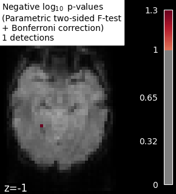

Note
Click here to download the full example code or to run this example in your browser via Binder
Massively univariate analysis of face vs house recognition#
A permuted Ordinary Least Squares algorithm is run at each voxel in order to determine whether or not it behaves differently under a “face viewing” condition and a “house viewing” condition. We consider the mean image per session and per condition. Otherwise, the observations cannot be exchanged at random because a time dependence exists between observations within a same session (see [1] for more detailed explanations).
The example shows the small differences that exist between Bonferroni-corrected p-values and family-wise corrected p-values obtained from a permutation test combined with a max-type procedure [2]. Bonferroni correction is a bit conservative, as revealed by the presence of a few false negative.
Note
If you are using Nilearn with a version older than 0.9.0,
then you should either upgrade your version or import maskers
from the input_data module instead of the maskers module.
That is, you should manually replace in the following example all occurrences of:
from nilearn.maskers import NiftiMasker
with:
from nilearn.input_data import NiftiMasker
References#
- [1] Winkler, A. M. et al. (2014).
Permutation inference for the general linear model. Neuroimage.
- [2] Anderson, M. J. & Robinson, J. (2001).
Permutation tests for linear models. Australian & New Zealand Journal of Statistics, 43(1), 75-88. (http://avesbiodiv.mncn.csic.es/estadistica/permut2.pdf)
# Author: Virgile Fritsch, <virgile.fritsch@inria.fr>, Feb. 2014
Load Haxby dataset
from nilearn import datasets, image
haxby_dataset = datasets.fetch_haxby(subjects=[2])
# print basic information on the dataset
print('Mask nifti image (3D) is located at: %s' % haxby_dataset.mask)
print('Functional nifti image (4D) is located at: %s' % haxby_dataset.func[0])
Mask nifti image (3D) is located at: /home/runner/work/nilearn/nilearn/nilearn_data/haxby2001/mask.nii.gz
Functional nifti image (4D) is located at: /home/runner/work/nilearn/nilearn/nilearn_data/haxby2001/subj2/bold.nii.gz
Restrict to faces and houses
import numpy as np
import pandas as pd
labels = pd.read_csv(haxby_dataset.session_target[0], sep=" ")
conditions = labels['labels']
categories = conditions.unique()
conditions_encoded = np.zeros_like(conditions)
for c, category in enumerate(categories):
conditions_encoded[conditions == category] = c
sessions = labels['chunks']
condition_mask = conditions.isin(['face', 'house'])
conditions_encoded = conditions_encoded[condition_mask]
Mask data
mask_filename = haxby_dataset.mask
from nilearn.image import index_img
from nilearn.maskers import NiftiMasker
nifti_masker = NiftiMasker(
smoothing_fwhm=8,
mask_img=mask_filename,
memory='nilearn_cache', memory_level=1) # cache options
func_filename = haxby_dataset.func[0]
func_reduced = index_img(func_filename,
condition_mask)
fmri_masked = nifti_masker.fit_transform(func_reduced)
# We consider the mean image per session and per condition.
# Otherwise, the observations cannot be exchanged at random because
# a time dependence exists between observations within a same session.
n_sessions = np.unique(sessions).size
grouped_fmri_masked = np.empty((2 * n_sessions, # two conditions per session
fmri_masked.shape[1]))
grouped_conditions_encoded = np.empty((2 * n_sessions, 1))
for s in range(n_sessions):
session_mask = sessions[condition_mask] == s
session_house_mask = np.logical_and(session_mask,
conditions[condition_mask] == 'house')
session_face_mask = np.logical_and(session_mask,
conditions[condition_mask] == 'face')
grouped_fmri_masked[2 * s] = fmri_masked[session_house_mask].mean(0)
grouped_fmri_masked[2 * s + 1] = fmri_masked[session_face_mask].mean(0)
grouped_conditions_encoded[2 * s] = conditions_encoded[
session_house_mask][0]
grouped_conditions_encoded[2 * s + 1] = conditions_encoded[
session_face_mask][0]
Perform massively univariate analysis with permuted OLS
We use a two-sided t-test to compute p-values, but we keep trace of the effect sign to add it back at the end and thus observe the signed effect
from nilearn.mass_univariate import permuted_ols
neg_log_pvals, t_scores_original_data, _ = permuted_ols(
grouped_conditions_encoded, grouped_fmri_masked,
# + intercept as a covariate by default
n_perm=10000, two_sided_test=True,
verbose=1, # display progress bar
n_jobs=1) # can be changed to use more CPUs
signed_neg_log_pvals = neg_log_pvals * np.sign(t_scores_original_data)
signed_neg_log_pvals_unmasked = nifti_masker.inverse_transform(
signed_neg_log_pvals)
[Parallel(n_jobs=1)]: Using backend SequentialBackend with 1 concurrent workers.
Job #1, processed 0/10000 permutations (0.00%, 22.008419036865234 seconds remaining)
Job #1, processed 10/10000 permutations (0.10%, 11.52220344543457 seconds remaining)
Job #1, processed 20/10000 permutations (0.20%, 9.967022657394407 seconds remaining)
Job #1, processed 30/10000 permutations (0.30%, 9.48887896537781 seconds remaining)
Job #1, processed 40/10000 permutations (0.40%, 9.304112434387205 seconds remaining)
Job #1, processed 50/10000 permutations (0.50%, 9.107314586639404 seconds remaining)
Job #1, processed 60/10000 permutations (0.60%, 8.992314736048382 seconds remaining)
Job #1, processed 70/10000 permutations (0.70%, 8.896172455378942 seconds remaining)
Job #1, processed 80/10000 permutations (0.80%, 8.819267272949219 seconds remaining)
Job #1, processed 90/10000 permutations (0.90%, 8.803918759028116 seconds remaining)
Job #1, processed 100/10000 permutations (1.00%, 8.757324457168579 seconds remaining)
Job #1, processed 110/10000 permutations (1.10%, 8.713218602267178 seconds remaining)
Job #1, processed 120/10000 permutations (1.20%, 8.685792287190754 seconds remaining)
Job #1, processed 130/10000 permutations (1.30%, 8.653987994560827 seconds remaining)
Job #1, processed 140/10000 permutations (1.40%, 8.630904640470233 seconds remaining)
Job #1, processed 150/10000 permutations (1.50%, 8.594962040583294 seconds remaining)
Job #1, processed 160/10000 permutations (1.60%, 8.57274842262268 seconds remaining)
Job #1, processed 170/10000 permutations (1.70%, 8.553980967577765 seconds remaining)
Job #1, processed 180/10000 permutations (1.80%, 8.538613319396973 seconds remaining)
Job #1, processed 190/10000 permutations (1.90%, 8.522692266263459 seconds remaining)
Job #1, processed 200/10000 permutations (2.00%, 8.513524293899536 seconds remaining)
Job #1, processed 210/10000 permutations (2.10%, 8.492765744527182 seconds remaining)
Job #1, processed 220/10000 permutations (2.20%, 8.4867157719352 seconds remaining)
Job #1, processed 230/10000 permutations (2.30%, 8.470963094545448 seconds remaining)
Job #1, processed 240/10000 permutations (2.40%, 8.455164273579914 seconds remaining)
Job #1, processed 250/10000 permutations (2.50%, 8.443520307540894 seconds remaining)
Job #1, processed 260/10000 permutations (2.60%, 8.428646087646484 seconds remaining)
Job #1, processed 270/10000 permutations (2.70%, 8.413557114424528 seconds remaining)
Job #1, processed 280/10000 permutations (2.80%, 8.405164514269147 seconds remaining)
Job #1, processed 290/10000 permutations (2.90%, 8.390511225009785 seconds remaining)
Job #1, processed 300/10000 permutations (3.00%, 8.378783384958904 seconds remaining)
Job #1, processed 310/10000 permutations (3.10%, 8.364928214780745 seconds remaining)
Job #1, processed 320/10000 permutations (3.20%, 8.356010913848875 seconds remaining)
Job #1, processed 330/10000 permutations (3.30%, 8.340879584803726 seconds remaining)
Job #1, processed 340/10000 permutations (3.40%, 8.334055507884306 seconds remaining)
Job #1, processed 350/10000 permutations (3.50%, 8.31853325026376 seconds remaining)
Job #1, processed 360/10000 permutations (3.60%, 8.307723734113905 seconds remaining)
Job #1, processed 370/10000 permutations (3.70%, 8.296534344956681 seconds remaining)
Job #1, processed 380/10000 permutations (3.80%, 8.28690993158441 seconds remaining)
Job #1, processed 390/10000 permutations (3.90%, 8.275788343869722 seconds remaining)
Job #1, processed 400/10000 permutations (4.00%, 8.265621185302734 seconds remaining)
Job #1, processed 410/10000 permutations (4.10%, 8.253904679926432 seconds remaining)
Job #1, processed 420/10000 permutations (4.20%, 8.246236188071114 seconds remaining)
Job #1, processed 430/10000 permutations (4.30%, 8.2355718945348 seconds remaining)
Job #1, processed 440/10000 permutations (4.40%, 8.226274425333195 seconds remaining)
Job #1, processed 450/10000 permutations (4.50%, 8.218147569232517 seconds remaining)
Job #1, processed 460/10000 permutations (4.60%, 8.206087775852371 seconds remaining)
Job #1, processed 470/10000 permutations (4.70%, 8.196154467602993 seconds remaining)
Job #1, processed 480/10000 permutations (4.80%, 8.184591253598532 seconds remaining)
Job #1, processed 490/10000 permutations (4.90%, 8.174941194300747 seconds remaining)
Job #1, processed 500/10000 permutations (5.00%, 8.163808822631836 seconds remaining)
Job #1, processed 510/10000 permutations (5.10%, 8.156330309662165 seconds remaining)
Job #1, processed 520/10000 permutations (5.20%, 8.14667245057913 seconds remaining)
Job #1, processed 530/10000 permutations (5.30%, 8.13951921912859 seconds remaining)
Job #1, processed 540/10000 permutations (5.40%, 8.134172483726783 seconds remaining)
Job #1, processed 550/10000 permutations (5.50%, 8.127349051562224 seconds remaining)
Job #1, processed 560/10000 permutations (5.60%, 8.127391406467982 seconds remaining)
Job #1, processed 570/10000 permutations (5.70%, 8.115894748453508 seconds remaining)
Job #1, processed 580/10000 permutations (5.80%, 8.107671162177777 seconds remaining)
Job #1, processed 590/10000 permutations (5.90%, 8.096026691339782 seconds remaining)
Job #1, processed 600/10000 permutations (6.00%, 8.087089538574219 seconds remaining)
Job #1, processed 610/10000 permutations (6.10%, 8.076358337871365 seconds remaining)
Job #1, processed 620/10000 permutations (6.20%, 8.070944878362841 seconds remaining)
Job #1, processed 630/10000 permutations (6.30%, 8.063696634201778 seconds remaining)
Job #1, processed 640/10000 permutations (6.40%, 8.053571820259092 seconds remaining)
Job #1, processed 650/10000 permutations (6.50%, 8.042344606839693 seconds remaining)
Job #1, processed 660/10000 permutations (6.60%, 8.033651915463535 seconds remaining)
Job #1, processed 670/10000 permutations (6.70%, 8.025486711245863 seconds remaining)
Job #1, processed 680/10000 permutations (6.80%, 8.01464782041662 seconds remaining)
Job #1, processed 690/10000 permutations (6.90%, 8.003534292829208 seconds remaining)
Job #1, processed 700/10000 permutations (7.00%, 7.994617019380843 seconds remaining)
Job #1, processed 710/10000 permutations (7.10%, 7.983691081194811 seconds remaining)
Job #1, processed 720/10000 permutations (7.20%, 7.976350254482692 seconds remaining)
Job #1, processed 730/10000 permutations (7.30%, 7.965908514310237 seconds remaining)
Job #1, processed 740/10000 permutations (7.40%, 7.958181851618998 seconds remaining)
Job #1, processed 750/10000 permutations (7.50%, 7.9496480623881025 seconds remaining)
Job #1, processed 760/10000 permutations (7.60%, 7.939642931285658 seconds remaining)
Job #1, processed 770/10000 permutations (7.70%, 7.930066139667065 seconds remaining)
Job #1, processed 780/10000 permutations (7.80%, 7.9210859689957065 seconds remaining)
Job #1, processed 790/10000 permutations (7.90%, 7.911635607103757 seconds remaining)
Job #1, processed 800/10000 permutations (8.00%, 7.902230501174927 seconds remaining)
Job #1, processed 810/10000 permutations (8.10%, 7.892695783097068 seconds remaining)
Job #1, processed 820/10000 permutations (8.20%, 7.883250213250881 seconds remaining)
Job #1, processed 830/10000 permutations (8.30%, 7.873774462435618 seconds remaining)
Job #1, processed 840/10000 permutations (8.40%, 7.863492409388223 seconds remaining)
Job #1, processed 850/10000 permutations (8.50%, 7.854490967357861 seconds remaining)
Job #1, processed 860/10000 permutations (8.60%, 7.847413207209389 seconds remaining)
Job #1, processed 870/10000 permutations (8.70%, 7.837032416771199 seconds remaining)
Job #1, processed 880/10000 permutations (8.80%, 7.828934929587624 seconds remaining)
Job #1, processed 890/10000 permutations (8.90%, 7.819627201958988 seconds remaining)
Job #1, processed 900/10000 permutations (9.00%, 7.809155888027615 seconds remaining)
Job #1, processed 910/10000 permutations (9.10%, 7.799937620267765 seconds remaining)
Job #1, processed 920/10000 permutations (9.20%, 7.791464038517164 seconds remaining)
Job #1, processed 930/10000 permutations (9.30%, 7.783006519399663 seconds remaining)
Job #1, processed 940/10000 permutations (9.40%, 7.773383343473394 seconds remaining)
Job #1, processed 950/10000 permutations (9.50%, 7.763507290890343 seconds remaining)
Job #1, processed 960/10000 permutations (9.60%, 7.755028347174328 seconds remaining)
Job #1, processed 970/10000 permutations (9.70%, 7.745639356141238 seconds remaining)
Job #1, processed 980/10000 permutations (9.80%, 7.736863369844397 seconds remaining)
Job #1, processed 990/10000 permutations (9.90%, 7.741510176899457 seconds remaining)
Job #1, processed 1000/10000 permutations (10.00%, 7.749895334243774 seconds remaining)
Job #1, processed 1010/10000 permutations (10.10%, 7.740982716626461 seconds remaining)
Job #1, processed 1020/10000 permutations (10.20%, 7.731451170117248 seconds remaining)
Job #1, processed 1030/10000 permutations (10.30%, 7.722084878717811 seconds remaining)
Job #1, processed 1040/10000 permutations (10.40%, 7.71249037522536 seconds remaining)
Job #1, processed 1050/10000 permutations (10.50%, 7.703132243383498 seconds remaining)
Job #1, processed 1060/10000 permutations (10.60%, 7.694841587318565 seconds remaining)
Job #1, processed 1070/10000 permutations (10.70%, 7.684817180455288 seconds remaining)
Job #1, processed 1080/10000 permutations (10.80%, 7.6754266950819225 seconds remaining)
Job #1, processed 1090/10000 permutations (10.90%, 7.667163232050904 seconds remaining)
Job #1, processed 1100/10000 permutations (11.00%, 7.658400904048573 seconds remaining)
Job #1, processed 1110/10000 permutations (11.10%, 7.649128104115392 seconds remaining)
Job #1, processed 1120/10000 permutations (11.20%, 7.639159849711827 seconds remaining)
Job #1, processed 1130/10000 permutations (11.30%, 7.630208796104498 seconds remaining)
Job #1, processed 1140/10000 permutations (11.40%, 7.620849567547178 seconds remaining)
Job #1, processed 1150/10000 permutations (11.50%, 7.614299577215444 seconds remaining)
Job #1, processed 1160/10000 permutations (11.60%, 7.604539106632102 seconds remaining)
Job #1, processed 1170/10000 permutations (11.70%, 7.59621169220688 seconds remaining)
Job #1, processed 1180/10000 permutations (11.80%, 7.586889945854574 seconds remaining)
Job #1, processed 1190/10000 permutations (11.90%, 7.579978904804261 seconds remaining)
Job #1, processed 1200/10000 permutations (12.00%, 7.570434252421061 seconds remaining)
Job #1, processed 1210/10000 permutations (12.10%, 7.562408900457966 seconds remaining)
Job #1, processed 1220/10000 permutations (12.20%, 7.553034430644551 seconds remaining)
Job #1, processed 1230/10000 permutations (12.30%, 7.545416682716308 seconds remaining)
Job #1, processed 1240/10000 permutations (12.40%, 7.53640305611395 seconds remaining)
Job #1, processed 1250/10000 permutations (12.50%, 7.526771068572998 seconds remaining)
Job #1, processed 1260/10000 permutations (12.60%, 7.520417368601239 seconds remaining)
Job #1, processed 1270/10000 permutations (12.70%, 7.511817207486611 seconds remaining)
Job #1, processed 1280/10000 permutations (12.80%, 7.502778425812721 seconds remaining)
Job #1, processed 1290/10000 permutations (12.90%, 7.494716455770093 seconds remaining)
Job #1, processed 1300/10000 permutations (13.00%, 7.484928076083844 seconds remaining)
Job #1, processed 1310/10000 permutations (13.10%, 7.475770953957362 seconds remaining)
Job #1, processed 1320/10000 permutations (13.20%, 7.466675223726215 seconds remaining)
Job #1, processed 1330/10000 permutations (13.30%, 7.457527420574561 seconds remaining)
Job #1, processed 1340/10000 permutations (13.40%, 7.44796220224295 seconds remaining)
Job #1, processed 1350/10000 permutations (13.50%, 7.439282699867531 seconds remaining)
Job #1, processed 1360/10000 permutations (13.60%, 7.4299668704762185 seconds remaining)
Job #1, processed 1370/10000 permutations (13.70%, 7.421523698054961 seconds remaining)
Job #1, processed 1380/10000 permutations (13.80%, 7.411963939666748 seconds remaining)
Job #1, processed 1390/10000 permutations (13.90%, 7.403061148074033 seconds remaining)
Job #1, processed 1400/10000 permutations (14.00%, 7.393081086022514 seconds remaining)
Job #1, processed 1410/10000 permutations (14.10%, 7.3845835712784575 seconds remaining)
Job #1, processed 1420/10000 permutations (14.20%, 7.375809279965683 seconds remaining)
Job #1, processed 1430/10000 permutations (14.30%, 7.3678351782418625 seconds remaining)
Job #1, processed 1440/10000 permutations (14.40%, 7.358976536326938 seconds remaining)
Job #1, processed 1450/10000 permutations (14.50%, 7.350199428097954 seconds remaining)
Job #1, processed 1460/10000 permutations (14.60%, 7.34076556767503 seconds remaining)
Job #1, processed 1470/10000 permutations (14.70%, 7.332626143280342 seconds remaining)
Job #1, processed 1480/10000 permutations (14.80%, 7.323130304748948 seconds remaining)
Job #1, processed 1490/10000 permutations (14.90%, 7.313553318881348 seconds remaining)
Job #1, processed 1500/10000 permutations (15.00%, 7.304452419281006 seconds remaining)
Job #1, processed 1510/10000 permutations (15.10%, 7.29559132594936 seconds remaining)
Job #1, processed 1520/10000 permutations (15.20%, 7.286582746003804 seconds remaining)
Job #1, processed 1530/10000 permutations (15.30%, 7.278314419042051 seconds remaining)
Job #1, processed 1540/10000 permutations (15.40%, 7.269394100486458 seconds remaining)
Job #1, processed 1550/10000 permutations (15.50%, 7.260334499420658 seconds remaining)
Job #1, processed 1560/10000 permutations (15.60%, 7.253750862219396 seconds remaining)
Job #1, processed 1570/10000 permutations (15.70%, 7.245755605636889 seconds remaining)
Job #1, processed 1580/10000 permutations (15.80%, 7.2370970128457754 seconds remaining)
Job #1, processed 1590/10000 permutations (15.90%, 7.228180847827743 seconds remaining)
Job #1, processed 1600/10000 permutations (16.00%, 7.218756258487701 seconds remaining)
Job #1, processed 1610/10000 permutations (16.10%, 7.210493200313971 seconds remaining)
Job #1, processed 1620/10000 permutations (16.20%, 7.201133804556764 seconds remaining)
Job #1, processed 1630/10000 permutations (16.30%, 7.19263036119426 seconds remaining)
Job #1, processed 1640/10000 permutations (16.40%, 7.1830658214848215 seconds remaining)
Job #1, processed 1650/10000 permutations (16.50%, 7.174163276498968 seconds remaining)
Job #1, processed 1660/10000 permutations (16.60%, 7.164816020482994 seconds remaining)
Job #1, processed 1670/10000 permutations (16.70%, 7.156434570243973 seconds remaining)
Job #1, processed 1680/10000 permutations (16.80%, 7.148272105625698 seconds remaining)
Job #1, processed 1690/10000 permutations (16.90%, 7.139383725160678 seconds remaining)
Job #1, processed 1700/10000 permutations (17.00%, 7.130723041646622 seconds remaining)
Job #1, processed 1710/10000 permutations (17.10%, 7.121588284509224 seconds remaining)
Job #1, processed 1720/10000 permutations (17.20%, 7.11455691692441 seconds remaining)
Job #1, processed 1730/10000 permutations (17.30%, 7.108331218620257 seconds remaining)
Job #1, processed 1740/10000 permutations (17.40%, 7.09942986499304 seconds remaining)
Job #1, processed 1750/10000 permutations (17.50%, 7.0905720846993585 seconds remaining)
Job #1, processed 1760/10000 permutations (17.60%, 7.081567233259028 seconds remaining)
Job #1, processed 1770/10000 permutations (17.70%, 7.072765334177826 seconds remaining)
Job #1, processed 1780/10000 permutations (17.80%, 7.064636787671722 seconds remaining)
Job #1, processed 1790/10000 permutations (17.90%, 7.05540073250925 seconds remaining)
Job #1, processed 1800/10000 permutations (18.00%, 7.046492682562934 seconds remaining)
Job #1, processed 1810/10000 permutations (18.10%, 7.037767951659735 seconds remaining)
Job #1, processed 1820/10000 permutations (18.20%, 7.029063201212621 seconds remaining)
Job #1, processed 1830/10000 permutations (18.30%, 7.020192828986162 seconds remaining)
Job #1, processed 1840/10000 permutations (18.40%, 7.011567219443943 seconds remaining)
Job #1, processed 1850/10000 permutations (18.50%, 7.00277084273261 seconds remaining)
Job #1, processed 1860/10000 permutations (18.60%, 6.993526404903781 seconds remaining)
Job #1, processed 1870/10000 permutations (18.70%, 6.984570402512576 seconds remaining)
Job #1, processed 1880/10000 permutations (18.80%, 6.975893086575447 seconds remaining)
Job #1, processed 1890/10000 permutations (18.90%, 6.966809718066423 seconds remaining)
Job #1, processed 1900/10000 permutations (19.00%, 6.958291769027711 seconds remaining)
Job #1, processed 1910/10000 permutations (19.10%, 6.950100073639635 seconds remaining)
Job #1, processed 1920/10000 permutations (19.20%, 6.942123979330062 seconds remaining)
Job #1, processed 1930/10000 permutations (19.30%, 6.932927755494191 seconds remaining)
Job #1, processed 1940/10000 permutations (19.40%, 6.9247010712771075 seconds remaining)
Job #1, processed 1950/10000 permutations (19.50%, 6.915754208197961 seconds remaining)
Job #1, processed 1960/10000 permutations (19.60%, 6.907363443958515 seconds remaining)
Job #1, processed 1970/10000 permutations (19.70%, 6.8984366177302325 seconds remaining)
Job #1, processed 1980/10000 permutations (19.80%, 6.890039362088598 seconds remaining)
Job #1, processed 1990/10000 permutations (19.90%, 6.881536996544307 seconds remaining)
Job #1, processed 2000/10000 permutations (20.00%, 6.872624397277832 seconds remaining)
Job #1, processed 2010/10000 permutations (20.10%, 6.863297840849084 seconds remaining)
Job #1, processed 2020/10000 permutations (20.20%, 6.854674561188952 seconds remaining)
Job #1, processed 2030/10000 permutations (20.30%, 6.845994594649142 seconds remaining)
Job #1, processed 2040/10000 permutations (20.40%, 6.8376264572143555 seconds remaining)
Job #1, processed 2050/10000 permutations (20.50%, 6.828515925058504 seconds remaining)
Job #1, processed 2060/10000 permutations (20.60%, 6.8199622029239695 seconds remaining)
Job #1, processed 2070/10000 permutations (20.70%, 6.810943146258737 seconds remaining)
Job #1, processed 2080/10000 permutations (20.80%, 6.802587472475492 seconds remaining)
Job #1, processed 2090/10000 permutations (20.90%, 6.794035880759573 seconds remaining)
Job #1, processed 2100/10000 permutations (21.00%, 6.7858829611823674 seconds remaining)
Job #1, processed 2110/10000 permutations (21.10%, 6.7769991040794775 seconds remaining)
Job #1, processed 2120/10000 permutations (21.20%, 6.768911024309554 seconds remaining)
Job #1, processed 2130/10000 permutations (21.30%, 6.760439938782526 seconds remaining)
Job #1, processed 2140/10000 permutations (21.40%, 6.752260796377592 seconds remaining)
Job #1, processed 2150/10000 permutations (21.50%, 6.744169933851375 seconds remaining)
Job #1, processed 2160/10000 permutations (21.60%, 6.735583376001429 seconds remaining)
Job #1, processed 2170/10000 permutations (21.70%, 6.726779970705235 seconds remaining)
Job #1, processed 2180/10000 permutations (21.80%, 6.720079531363391 seconds remaining)
Job #1, processed 2190/10000 permutations (21.90%, 6.71142014194297 seconds remaining)
Job #1, processed 2200/10000 permutations (22.00%, 6.7026660008863965 seconds remaining)
Job #1, processed 2210/10000 permutations (22.10%, 6.6937506878537825 seconds remaining)
Job #1, processed 2220/10000 permutations (22.20%, 6.685038794268359 seconds remaining)
Job #1, processed 2230/10000 permutations (22.30%, 6.6760308753214614 seconds remaining)
Job #1, processed 2240/10000 permutations (22.40%, 6.666650269712721 seconds remaining)
Job #1, processed 2250/10000 permutations (22.50%, 6.657274590598213 seconds remaining)
Job #1, processed 2260/10000 permutations (22.60%, 6.649509088128014 seconds remaining)
Job #1, processed 2270/10000 permutations (22.70%, 6.6605195610533725 seconds remaining)
Job #1, processed 2280/10000 permutations (22.80%, 6.655240364242018 seconds remaining)
Job #1, processed 2290/10000 permutations (22.90%, 6.647691877648299 seconds remaining)
Job #1, processed 2300/10000 permutations (23.00%, 6.639923769494762 seconds remaining)
Job #1, processed 2310/10000 permutations (23.10%, 6.631355536448491 seconds remaining)
Job #1, processed 2320/10000 permutations (23.20%, 6.622138713968211 seconds remaining)
Job #1, processed 2330/10000 permutations (23.30%, 6.6131796724294905 seconds remaining)
Job #1, processed 2340/10000 permutations (23.40%, 6.6039449740678835 seconds remaining)
Job #1, processed 2350/10000 permutations (23.50%, 6.595336432152606 seconds remaining)
Job #1, processed 2360/10000 permutations (23.60%, 6.585999913134818 seconds remaining)
Job #1, processed 2370/10000 permutations (23.70%, 6.577137974244129 seconds remaining)
Job #1, processed 2380/10000 permutations (23.80%, 6.568603878261663 seconds remaining)
Job #1, processed 2390/10000 permutations (23.90%, 6.559858553579162 seconds remaining)
Job #1, processed 2400/10000 permutations (24.00%, 6.550860166549683 seconds remaining)
Job #1, processed 2410/10000 permutations (24.10%, 6.543241504811647 seconds remaining)
Job #1, processed 2420/10000 permutations (24.20%, 6.534417093292741 seconds remaining)
Job #1, processed 2430/10000 permutations (24.30%, 6.525730811028814 seconds remaining)
Job #1, processed 2440/10000 permutations (24.40%, 6.522864771670982 seconds remaining)
Job #1, processed 2450/10000 permutations (24.50%, 6.513986845405735 seconds remaining)
Job #1, processed 2460/10000 permutations (24.60%, 6.504644651723102 seconds remaining)
Job #1, processed 2470/10000 permutations (24.70%, 6.4960674959638345 seconds remaining)
Job #1, processed 2480/10000 permutations (24.80%, 6.48668227657195 seconds remaining)
Job #1, processed 2490/10000 permutations (24.90%, 6.478434121273607 seconds remaining)
Job #1, processed 2500/10000 permutations (25.00%, 6.46943736076355 seconds remaining)
Job #1, processed 2510/10000 permutations (25.10%, 6.460948957390045 seconds remaining)
Job #1, processed 2520/10000 permutations (25.20%, 6.452183806706989 seconds remaining)
Job #1, processed 2530/10000 permutations (25.30%, 6.442861895316203 seconds remaining)
Job #1, processed 2540/10000 permutations (25.40%, 6.434446424949827 seconds remaining)
Job #1, processed 2550/10000 permutations (25.50%, 6.4260468623217415 seconds remaining)
Job #1, processed 2560/10000 permutations (25.60%, 6.416947178542614 seconds remaining)
Job #1, processed 2570/10000 permutations (25.70%, 6.407874510909797 seconds remaining)
Job #1, processed 2580/10000 permutations (25.80%, 6.3998172135316125 seconds remaining)
Job #1, processed 2590/10000 permutations (25.90%, 6.390977766523029 seconds remaining)
Job #1, processed 2600/10000 permutations (26.00%, 6.383266302255484 seconds remaining)
Job #1, processed 2610/10000 permutations (26.10%, 6.373998136812699 seconds remaining)
Job #1, processed 2620/10000 permutations (26.20%, 6.3656264425234035 seconds remaining)
Job #1, processed 2630/10000 permutations (26.30%, 6.356724992904373 seconds remaining)
Job #1, processed 2640/10000 permutations (26.40%, 6.348149415218468 seconds remaining)
Job #1, processed 2650/10000 permutations (26.50%, 6.338741446441075 seconds remaining)
Job #1, processed 2660/10000 permutations (26.60%, 6.329919114148707 seconds remaining)
Job #1, processed 2670/10000 permutations (26.70%, 6.320687102021349 seconds remaining)
Job #1, processed 2680/10000 permutations (26.80%, 6.311824652686048 seconds remaining)
Job #1, processed 2690/10000 permutations (26.90%, 6.3029264092002215 seconds remaining)
Job #1, processed 2700/10000 permutations (27.00%, 6.294306852199413 seconds remaining)
Job #1, processed 2710/10000 permutations (27.10%, 6.285322336253206 seconds remaining)
Job #1, processed 2720/10000 permutations (27.20%, 6.276532909449409 seconds remaining)
Job #1, processed 2730/10000 permutations (27.30%, 6.267592790799263 seconds remaining)
Job #1, processed 2740/10000 permutations (27.40%, 6.259027954435696 seconds remaining)
Job #1, processed 2750/10000 permutations (27.50%, 6.249916965311224 seconds remaining)
Job #1, processed 2760/10000 permutations (27.60%, 6.241438164227251 seconds remaining)
Job #1, processed 2770/10000 permutations (27.70%, 6.2325466100919975 seconds remaining)
Job #1, processed 2780/10000 permutations (27.80%, 6.223988404376901 seconds remaining)
Job #1, processed 2790/10000 permutations (27.90%, 6.215286023300608 seconds remaining)
Job #1, processed 2800/10000 permutations (28.00%, 6.206292016165597 seconds remaining)
Job #1, processed 2810/10000 permutations (28.10%, 6.197489596770752 seconds remaining)
Job #1, processed 2820/10000 permutations (28.20%, 6.188684728974145 seconds remaining)
Job #1, processed 2830/10000 permutations (28.30%, 6.179745169494684 seconds remaining)
Job #1, processed 2840/10000 permutations (28.40%, 6.171236125516219 seconds remaining)
Job #1, processed 2850/10000 permutations (28.50%, 6.162470600061249 seconds remaining)
Job #1, processed 2860/10000 permutations (28.60%, 6.15454873338446 seconds remaining)
Job #1, processed 2870/10000 permutations (28.70%, 6.146272379346841 seconds remaining)
Job #1, processed 2880/10000 permutations (28.80%, 6.137353155348036 seconds remaining)
Job #1, processed 2890/10000 permutations (28.90%, 6.129692660071032 seconds remaining)
Job #1, processed 2900/10000 permutations (29.00%, 6.121307225062929 seconds remaining)
Job #1, processed 2910/10000 permutations (29.10%, 6.1122538084836355 seconds remaining)
Job #1, processed 2920/10000 permutations (29.20%, 6.10405492455992 seconds remaining)
Job #1, processed 2930/10000 permutations (29.30%, 6.095392309358096 seconds remaining)
Job #1, processed 2940/10000 permutations (29.40%, 6.08682741924208 seconds remaining)
Job #1, processed 2950/10000 permutations (29.50%, 6.077860290721311 seconds remaining)
Job #1, processed 2960/10000 permutations (29.60%, 6.068971891660948 seconds remaining)
Job #1, processed 2970/10000 permutations (29.70%, 6.059890788813632 seconds remaining)
Job #1, processed 2980/10000 permutations (29.80%, 6.050987067638628 seconds remaining)
Job #1, processed 2990/10000 permutations (29.90%, 6.042468942527388 seconds remaining)
Job #1, processed 3000/10000 permutations (30.00%, 6.033763488133749 seconds remaining)
Job #1, processed 3010/10000 permutations (30.10%, 6.024872260236265 seconds remaining)
Job #1, processed 3020/10000 permutations (30.20%, 6.016370440160991 seconds remaining)
Job #1, processed 3030/10000 permutations (30.30%, 6.0075894495835005 seconds remaining)
Job #1, processed 3040/10000 permutations (30.40%, 5.999273413106014 seconds remaining)
Job #1, processed 3050/10000 permutations (30.50%, 5.990440032521232 seconds remaining)
Job #1, processed 3060/10000 permutations (30.60%, 5.981994741103228 seconds remaining)
Job #1, processed 3070/10000 permutations (30.70%, 5.973690436018407 seconds remaining)
Job #1, processed 3080/10000 permutations (30.80%, 5.964885541370936 seconds remaining)
Job #1, processed 3090/10000 permutations (30.90%, 5.956526500121675 seconds remaining)
Job #1, processed 3100/10000 permutations (31.00%, 5.948355005633446 seconds remaining)
Job #1, processed 3110/10000 permutations (31.10%, 5.939503232765812 seconds remaining)
Job #1, processed 3120/10000 permutations (31.20%, 5.930977466778878 seconds remaining)
Job #1, processed 3130/10000 permutations (31.30%, 5.922282317956797 seconds remaining)
Job #1, processed 3140/10000 permutations (31.40%, 5.913353986800855 seconds remaining)
Job #1, processed 3150/10000 permutations (31.50%, 5.9043237746707975 seconds remaining)
Job #1, processed 3160/10000 permutations (31.60%, 5.895315930813173 seconds remaining)
Job #1, processed 3170/10000 permutations (31.70%, 5.886516631965757 seconds remaining)
Job #1, processed 3180/10000 permutations (31.80%, 5.878019142450777 seconds remaining)
Job #1, processed 3190/10000 permutations (31.90%, 5.869625388268019 seconds remaining)
Job #1, processed 3200/10000 permutations (32.00%, 5.860941797494888 seconds remaining)
Job #1, processed 3210/10000 permutations (32.10%, 5.852010672708909 seconds remaining)
Job #1, processed 3220/10000 permutations (32.20%, 5.843427786915938 seconds remaining)
Job #1, processed 3230/10000 permutations (32.30%, 5.834459291523086 seconds remaining)
Job #1, processed 3240/10000 permutations (32.40%, 5.825472098809701 seconds remaining)
Job #1, processed 3250/10000 permutations (32.50%, 5.816481828689576 seconds remaining)
Job #1, processed 3260/10000 permutations (32.60%, 5.8076364160315395 seconds remaining)
Job #1, processed 3270/10000 permutations (32.70%, 5.798916729947477 seconds remaining)
Job #1, processed 3280/10000 permutations (32.80%, 5.79021507356225 seconds remaining)
Job #1, processed 3290/10000 permutations (32.90%, 5.7815501704404415 seconds remaining)
Job #1, processed 3300/10000 permutations (33.00%, 5.772676106655236 seconds remaining)
Job #1, processed 3310/10000 permutations (33.10%, 5.764037114976036 seconds remaining)
Job #1, processed 3320/10000 permutations (33.20%, 5.755114342792924 seconds remaining)
Job #1, processed 3330/10000 permutations (33.30%, 5.746461759458434 seconds remaining)
Job #1, processed 3340/10000 permutations (33.40%, 5.737809034164794 seconds remaining)
Job #1, processed 3350/10000 permutations (33.50%, 5.729037850650388 seconds remaining)
Job #1, processed 3360/10000 permutations (33.60%, 5.7201187042962935 seconds remaining)
Job #1, processed 3370/10000 permutations (33.70%, 5.711418978892023 seconds remaining)
Job #1, processed 3380/10000 permutations (33.80%, 5.70263269102785 seconds remaining)
Job #1, processed 3390/10000 permutations (33.90%, 5.693866064414865 seconds remaining)
Job #1, processed 3400/10000 permutations (34.00%, 5.685360894483678 seconds remaining)
Job #1, processed 3410/10000 permutations (34.10%, 5.6765935085386126 seconds remaining)
Job #1, processed 3420/10000 permutations (34.20%, 5.669591228864346 seconds remaining)
Job #1, processed 3430/10000 permutations (34.30%, 5.66085435628196 seconds remaining)
Job #1, processed 3440/10000 permutations (34.40%, 5.65202943668809 seconds remaining)
Job #1, processed 3450/10000 permutations (34.50%, 5.6436988443568135 seconds remaining)
Job #1, processed 3460/10000 permutations (34.60%, 5.6348573982371075 seconds remaining)
Job #1, processed 3470/10000 permutations (34.70%, 5.626481408688107 seconds remaining)
Job #1, processed 3480/10000 permutations (34.80%, 5.618249821936948 seconds remaining)
Job #1, processed 3490/10000 permutations (34.90%, 5.609515867123972 seconds remaining)
Job #1, processed 3500/10000 permutations (35.00%, 5.600656747817993 seconds remaining)
Job #1, processed 3510/10000 permutations (35.10%, 5.59173627252932 seconds remaining)
Job #1, processed 3520/10000 permutations (35.20%, 5.5828575220975 seconds remaining)
Job #1, processed 3530/10000 permutations (35.30%, 5.573932563954643 seconds remaining)
Job #1, processed 3540/10000 permutations (35.40%, 5.5650224901188565 seconds remaining)
Job #1, processed 3550/10000 permutations (35.50%, 5.556566799190683 seconds remaining)
Job #1, processed 3560/10000 permutations (35.60%, 5.547632710317547 seconds remaining)
Job #1, processed 3570/10000 permutations (35.70%, 5.538956903943828 seconds remaining)
Job #1, processed 3580/10000 permutations (35.80%, 5.53100120688284 seconds remaining)
Job #1, processed 3590/10000 permutations (35.90%, 5.522653685306772 seconds remaining)
Job #1, processed 3600/10000 permutations (36.00%, 5.513980441623263 seconds remaining)
Job #1, processed 3610/10000 permutations (36.10%, 5.5052182278144395 seconds remaining)
Job #1, processed 3620/10000 permutations (36.20%, 5.4963228188825575 seconds remaining)
Job #1, processed 3630/10000 permutations (36.30%, 5.487770809614955 seconds remaining)
Job #1, processed 3640/10000 permutations (36.40%, 5.478989140018002 seconds remaining)
Job #1, processed 3650/10000 permutations (36.50%, 5.470098988650596 seconds remaining)
Job #1, processed 3660/10000 permutations (36.60%, 5.461485025009822 seconds remaining)
Job #1, processed 3670/10000 permutations (36.70%, 5.4527213729369866 seconds remaining)
Job #1, processed 3680/10000 permutations (36.80%, 5.44425422212352 seconds remaining)
Job #1, processed 3690/10000 permutations (36.90%, 5.435423771540324 seconds remaining)
Job #1, processed 3700/10000 permutations (37.00%, 5.426766891737242 seconds remaining)
Job #1, processed 3710/10000 permutations (37.10%, 5.417955967293916 seconds remaining)
Job #1, processed 3720/10000 permutations (37.20%, 5.409462682662471 seconds remaining)
Job #1, processed 3730/10000 permutations (37.30%, 5.401189597618165 seconds remaining)
Job #1, processed 3740/10000 permutations (37.40%, 5.392512547141091 seconds remaining)
Job #1, processed 3750/10000 permutations (37.50%, 5.383923848470053 seconds remaining)
Job #1, processed 3760/10000 permutations (37.60%, 5.3753772695013815 seconds remaining)
Job #1, processed 3770/10000 permutations (37.70%, 5.366694187928258 seconds remaining)
Job #1, processed 3780/10000 permutations (37.80%, 5.358161163077784 seconds remaining)
Job #1, processed 3790/10000 permutations (37.90%, 5.349728628324645 seconds remaining)
Job #1, processed 3800/10000 permutations (38.00%, 5.341006304088392 seconds remaining)
Job #1, processed 3810/10000 permutations (38.10%, 5.33263466990213 seconds remaining)
Job #1, processed 3820/10000 permutations (38.20%, 5.323854053207716 seconds remaining)
Job #1, processed 3830/10000 permutations (38.30%, 5.315363667963691 seconds remaining)
Job #1, processed 3840/10000 permutations (38.40%, 5.3067701160907745 seconds remaining)
Job #1, processed 3850/10000 permutations (38.50%, 5.297990910418622 seconds remaining)
Job #1, processed 3860/10000 permutations (38.60%, 5.289200194759072 seconds remaining)
Job #1, processed 3870/10000 permutations (38.70%, 5.280577882623795 seconds remaining)
Job #1, processed 3880/10000 permutations (38.80%, 5.271784529243549 seconds remaining)
Job #1, processed 3890/10000 permutations (38.90%, 5.263695958340996 seconds remaining)
Job #1, processed 3900/10000 permutations (39.00%, 5.255002590326162 seconds remaining)
Job #1, processed 3910/10000 permutations (39.10%, 5.246278315858767 seconds remaining)
Job #1, processed 3920/10000 permutations (39.20%, 5.237336041975993 seconds remaining)
Job #1, processed 3930/10000 permutations (39.30%, 5.228634396885491 seconds remaining)
Job #1, processed 3940/10000 permutations (39.40%, 5.219884345979255 seconds remaining)
Job #1, processed 3950/10000 permutations (39.50%, 5.211336642880982 seconds remaining)
Job #1, processed 3960/10000 permutations (39.60%, 5.203084399001766 seconds remaining)
Job #1, processed 3970/10000 permutations (39.70%, 5.194204461964912 seconds remaining)
Job #1, processed 3980/10000 permutations (39.80%, 5.1857468638587845 seconds remaining)
Job #1, processed 3990/10000 permutations (39.90%, 5.176970141274588 seconds remaining)
Job #1, processed 4000/10000 permutations (40.00%, 5.168698668479919 seconds remaining)
Job #1, processed 4010/10000 permutations (40.10%, 5.159941777326816 seconds remaining)
Job #1, processed 4020/10000 permutations (40.20%, 5.151143864019592 seconds remaining)
Job #1, processed 4030/10000 permutations (40.30%, 5.1423284025405245 seconds remaining)
Job #1, processed 4040/10000 permutations (40.40%, 5.133581791773881 seconds remaining)
Job #1, processed 4050/10000 permutations (40.50%, 5.125003361407622 seconds remaining)
Job #1, processed 4060/10000 permutations (40.60%, 5.116177328701677 seconds remaining)
Job #1, processed 4070/10000 permutations (40.70%, 5.107943247225712 seconds remaining)
Job #1, processed 4080/10000 permutations (40.80%, 5.0993926104377305 seconds remaining)
Job #1, processed 4090/10000 permutations (40.90%, 5.090465245445084 seconds remaining)
Job #1, processed 4100/10000 permutations (41.00%, 5.08179469806392 seconds remaining)
Job #1, processed 4110/10000 permutations (41.10%, 5.072901850489224 seconds remaining)
Job #1, processed 4120/10000 permutations (41.20%, 5.064578192905314 seconds remaining)
Job #1, processed 4130/10000 permutations (41.30%, 5.0559580187532 seconds remaining)
Job #1, processed 4140/10000 permutations (41.40%, 5.047302804707329 seconds remaining)
Job #1, processed 4150/10000 permutations (41.50%, 5.038497034325657 seconds remaining)
Job #1, processed 4160/10000 permutations (41.60%, 5.029847145080566 seconds remaining)
Job #1, processed 4170/10000 permutations (41.70%, 5.02112222804154 seconds remaining)
Job #1, processed 4180/10000 permutations (41.80%, 5.012538318999077 seconds remaining)
Job #1, processed 4190/10000 permutations (41.90%, 5.003728044915029 seconds remaining)
Job #1, processed 4200/10000 permutations (42.00%, 4.994929926736014 seconds remaining)
Job #1, processed 4210/10000 permutations (42.10%, 4.986588450905263 seconds remaining)
Job #1, processed 4220/10000 permutations (42.20%, 4.978085076074464 seconds remaining)
Job #1, processed 4230/10000 permutations (42.30%, 4.969358359668272 seconds remaining)
Job #1, processed 4240/10000 permutations (42.40%, 4.961027073410323 seconds remaining)
Job #1, processed 4250/10000 permutations (42.50%, 4.952393181183759 seconds remaining)
Job #1, processed 4260/10000 permutations (42.60%, 4.9435753844713375 seconds remaining)
Job #1, processed 4270/10000 permutations (42.70%, 4.934848842911195 seconds remaining)
Job #1, processed 4280/10000 permutations (42.80%, 4.926159237032739 seconds remaining)
Job #1, processed 4290/10000 permutations (42.90%, 4.917384897912299 seconds remaining)
Job #1, processed 4300/10000 permutations (43.00%, 4.908855865168016 seconds remaining)
Job #1, processed 4310/10000 permutations (43.10%, 4.900009827381497 seconds remaining)
Job #1, processed 4320/10000 permutations (43.20%, 4.8912779181091866 seconds remaining)
Job #1, processed 4330/10000 permutations (43.30%, 4.882513893669252 seconds remaining)
Job #1, processed 4340/10000 permutations (43.40%, 4.873885432696013 seconds remaining)
Job #1, processed 4350/10000 permutations (43.50%, 4.8654227859672465 seconds remaining)
Job #1, processed 4360/10000 permutations (43.60%, 4.8570625607026825 seconds remaining)
Job #1, processed 4370/10000 permutations (43.70%, 4.848339075354744 seconds remaining)
Job #1, processed 4380/10000 permutations (43.80%, 4.839826660069157 seconds remaining)
Job #1, processed 4390/10000 permutations (43.90%, 4.83107609792288 seconds remaining)
Job #1, processed 4400/10000 permutations (44.00%, 4.822404644706032 seconds remaining)
Job #1, processed 4410/10000 permutations (44.10%, 4.8137119173192655 seconds remaining)
Job #1, processed 4420/10000 permutations (44.20%, 4.805174556792592 seconds remaining)
Job #1, processed 4430/10000 permutations (44.30%, 4.796371899124732 seconds remaining)
Job #1, processed 4440/10000 permutations (44.40%, 4.7877785858807265 seconds remaining)
Job #1, processed 4450/10000 permutations (44.50%, 4.778992146588443 seconds remaining)
Job #1, processed 4460/10000 permutations (44.60%, 4.770584125689862 seconds remaining)
Job #1, processed 4470/10000 permutations (44.70%, 4.762324304922048 seconds remaining)
Job #1, processed 4480/10000 permutations (44.80%, 4.75388509460858 seconds remaining)
Job #1, processed 4490/10000 permutations (44.90%, 4.745091054381135 seconds remaining)
Job #1, processed 4500/10000 permutations (45.00%, 4.736563073264229 seconds remaining)
Job #1, processed 4510/10000 permutations (45.10%, 4.727866085564218 seconds remaining)
Job #1, processed 4520/10000 permutations (45.20%, 4.719059942042932 seconds remaining)
Job #1, processed 4530/10000 permutations (45.30%, 4.710349217155912 seconds remaining)
Job #1, processed 4540/10000 permutations (45.40%, 4.701716996499621 seconds remaining)
Job #1, processed 4550/10000 permutations (45.50%, 4.6929133121783915 seconds remaining)
Job #1, processed 4560/10000 permutations (45.60%, 4.684231205990439 seconds remaining)
Job #1, processed 4570/10000 permutations (45.70%, 4.675422478035189 seconds remaining)
Job #1, processed 4580/10000 permutations (45.80%, 4.666694343350341 seconds remaining)
Job #1, processed 4590/10000 permutations (45.90%, 4.658152342362082 seconds remaining)
Job #1, processed 4600/10000 permutations (46.00%, 4.649476569631826 seconds remaining)
Job #1, processed 4610/10000 permutations (46.10%, 4.640918680488934 seconds remaining)
Job #1, processed 4620/10000 permutations (46.20%, 4.632179906357933 seconds remaining)
Job #1, processed 4630/10000 permutations (46.30%, 4.623644303554593 seconds remaining)
Job #1, processed 4640/10000 permutations (46.40%, 4.6148756536944155 seconds remaining)
Job #1, processed 4650/10000 permutations (46.50%, 4.606183436609084 seconds remaining)
Job #1, processed 4660/10000 permutations (46.60%, 4.597927375924433 seconds remaining)
Job #1, processed 4670/10000 permutations (46.70%, 4.589390378947942 seconds remaining)
Job #1, processed 4680/10000 permutations (46.80%, 4.580727581285005 seconds remaining)
Job #1, processed 4690/10000 permutations (46.90%, 4.5722376924079615 seconds remaining)
Job #1, processed 4700/10000 permutations (47.00%, 4.56358202974847 seconds remaining)
Job #1, processed 4710/10000 permutations (47.10%, 4.555000902487721 seconds remaining)
Job #1, processed 4720/10000 permutations (47.20%, 4.546257649437855 seconds remaining)
Job #1, processed 4730/10000 permutations (47.30%, 4.537721593586638 seconds remaining)
Job #1, processed 4740/10000 permutations (47.40%, 4.530509401474321 seconds remaining)
Job #1, processed 4750/10000 permutations (47.50%, 4.522133137050428 seconds remaining)
Job #1, processed 4760/10000 permutations (47.60%, 4.513321916596228 seconds remaining)
Job #1, processed 4770/10000 permutations (47.70%, 4.504663634350215 seconds remaining)
Job #1, processed 4780/10000 permutations (47.80%, 4.4959557226013445 seconds remaining)
Job #1, processed 4790/10000 permutations (47.90%, 4.487208633183935 seconds remaining)
Job #1, processed 4800/10000 permutations (48.00%, 4.478576521078745 seconds remaining)
Job #1, processed 4810/10000 permutations (48.10%, 4.470187926738524 seconds remaining)
Job #1, processed 4820/10000 permutations (48.20%, 4.461826494620548 seconds remaining)
Job #1, processed 4830/10000 permutations (48.30%, 4.453158084897027 seconds remaining)
Job #1, processed 4840/10000 permutations (48.40%, 4.4444733375360155 seconds remaining)
Job #1, processed 4850/10000 permutations (48.50%, 4.435795489045763 seconds remaining)
Job #1, processed 4860/10000 permutations (48.60%, 4.427139085016132 seconds remaining)
Job #1, processed 4870/10000 permutations (48.70%, 4.418446861008598 seconds remaining)
Job #1, processed 4880/10000 permutations (48.80%, 4.409771028112193 seconds remaining)
Job #1, processed 4890/10000 permutations (48.90%, 4.400997036073837 seconds remaining)
Job #1, processed 4900/10000 permutations (49.00%, 4.3922268127908515 seconds remaining)
Job #1, processed 4910/10000 permutations (49.10%, 4.383545590515292 seconds remaining)
Job #1, processed 4920/10000 permutations (49.20%, 4.37484571798061 seconds remaining)
Job #1, processed 4930/10000 permutations (49.30%, 4.3662151995343566 seconds remaining)
Job #1, processed 4940/10000 permutations (49.40%, 4.357900105024639 seconds remaining)
Job #1, processed 4950/10000 permutations (49.50%, 4.349379539489746 seconds remaining)
Job #1, processed 4960/10000 permutations (49.60%, 4.34080906068125 seconds remaining)
Job #1, processed 4970/10000 permutations (49.70%, 4.3320905716126585 seconds remaining)
Job #1, processed 4980/10000 permutations (49.80%, 4.323426521446811 seconds remaining)
Job #1, processed 4990/10000 permutations (49.90%, 4.314700884905034 seconds remaining)
Job #1, processed 5000/10000 permutations (50.00%, 4.3059399127960205 seconds remaining)
Job #1, processed 5010/10000 permutations (50.10%, 4.2977374632677385 seconds remaining)
Job #1, processed 5020/10000 permutations (50.20%, 4.289117127300734 seconds remaining)
Job #1, processed 5030/10000 permutations (50.30%, 4.280843382564265 seconds remaining)
Job #1, processed 5040/10000 permutations (50.40%, 4.2722715271843805 seconds remaining)
Job #1, processed 5050/10000 permutations (50.50%, 4.263947527007301 seconds remaining)
Job #1, processed 5060/10000 permutations (50.60%, 4.2556312244400205 seconds remaining)
Job #1, processed 5070/10000 permutations (50.70%, 4.2470941557686706 seconds remaining)
Job #1, processed 5080/10000 permutations (50.80%, 4.238728264185387 seconds remaining)
Job #1, processed 5090/10000 permutations (50.90%, 4.230232741837417 seconds remaining)
Job #1, processed 5100/10000 permutations (51.00%, 4.22201091635461 seconds remaining)
Job #1, processed 5110/10000 permutations (51.10%, 4.213394205630875 seconds remaining)
Job #1, processed 5120/10000 permutations (51.20%, 4.205126088112592 seconds remaining)
Job #1, processed 5130/10000 permutations (51.30%, 4.196494410609642 seconds remaining)
Job #1, processed 5140/10000 permutations (51.40%, 4.187988189407824 seconds remaining)
Job #1, processed 5150/10000 permutations (51.50%, 4.179339853305261 seconds remaining)
Job #1, processed 5160/10000 permutations (51.60%, 4.170624004778012 seconds remaining)
Job #1, processed 5170/10000 permutations (51.70%, 4.1622285755275525 seconds remaining)
Job #1, processed 5180/10000 permutations (51.80%, 4.153779018799772 seconds remaining)
Job #1, processed 5190/10000 permutations (51.90%, 4.1451778655337 seconds remaining)
Job #1, processed 5200/10000 permutations (52.00%, 4.13655633192796 seconds remaining)
Job #1, processed 5210/10000 permutations (52.10%, 4.127897344944344 seconds remaining)
Job #1, processed 5220/10000 permutations (52.20%, 4.119192402938316 seconds remaining)
Job #1, processed 5230/10000 permutations (52.30%, 4.110961109456779 seconds remaining)
Job #1, processed 5240/10000 permutations (52.40%, 4.1024501542098655 seconds remaining)
Job #1, processed 5250/10000 permutations (52.50%, 4.093624694006784 seconds remaining)
Job #1, processed 5260/10000 permutations (52.60%, 4.085001773254046 seconds remaining)
Job #1, processed 5270/10000 permutations (52.70%, 4.07627895796774 seconds remaining)
Job #1, processed 5280/10000 permutations (52.80%, 4.067590016307253 seconds remaining)
Job #1, processed 5290/10000 permutations (52.90%, 4.05884942305336 seconds remaining)
Job #1, processed 5300/10000 permutations (53.00%, 4.050215739124226 seconds remaining)
Job #1, processed 5310/10000 permutations (53.10%, 4.041618825801124 seconds remaining)
Job #1, processed 5320/10000 permutations (53.20%, 4.032839067000195 seconds remaining)
Job #1, processed 5330/10000 permutations (53.30%, 4.024193048924488 seconds remaining)
Job #1, processed 5340/10000 permutations (53.40%, 4.015522087111456 seconds remaining)
Job #1, processed 5350/10000 permutations (53.50%, 4.006731782004098 seconds remaining)
Job #1, processed 5360/10000 permutations (53.60%, 3.9981207776425487 seconds remaining)
Job #1, processed 5370/10000 permutations (53.70%, 3.9893530884712542 seconds remaining)
Job #1, processed 5380/10000 permutations (53.80%, 3.980686729282252 seconds remaining)
Job #1, processed 5390/10000 permutations (53.90%, 3.971960820603238 seconds remaining)
Job #1, processed 5400/10000 permutations (54.00%, 3.9634866184658475 seconds remaining)
Job #1, processed 5410/10000 permutations (54.10%, 3.9548061638795073 seconds remaining)
Job #1, processed 5420/10000 permutations (54.20%, 3.946163899784158 seconds remaining)
Job #1, processed 5430/10000 permutations (54.30%, 3.9373998457555617 seconds remaining)
Job #1, processed 5440/10000 permutations (54.40%, 3.928688943386078 seconds remaining)
Job #1, processed 5450/10000 permutations (54.50%, 3.9199443716521656 seconds remaining)
Job #1, processed 5460/10000 permutations (54.60%, 3.911230773716182 seconds remaining)
Job #1, processed 5470/10000 permutations (54.70%, 3.9025335660582265 seconds remaining)
Job #1, processed 5480/10000 permutations (54.80%, 3.893825614539377 seconds remaining)
Job #1, processed 5490/10000 permutations (54.90%, 3.8851160629633785 seconds remaining)
Job #1, processed 5500/10000 permutations (55.00%, 3.876409617337314 seconds remaining)
Job #1, processed 5510/10000 permutations (55.10%, 3.867664085758576 seconds remaining)
Job #1, processed 5520/10000 permutations (55.20%, 3.8591690339903897 seconds remaining)
Job #1, processed 5530/10000 permutations (55.30%, 3.85063255156574 seconds remaining)
Job #1, processed 5540/10000 permutations (55.40%, 3.8420228880665364 seconds remaining)
Job #1, processed 5550/10000 permutations (55.50%, 3.8333982755471996 seconds remaining)
Job #1, processed 5560/10000 permutations (55.60%, 3.824945098204578 seconds remaining)
Job #1, processed 5570/10000 permutations (55.70%, 3.8162822226861643 seconds remaining)
Job #1, processed 5580/10000 permutations (55.80%, 3.8075723340434413 seconds remaining)
Job #1, processed 5590/10000 permutations (55.90%, 3.798798513327174 seconds remaining)
Job #1, processed 5600/10000 permutations (56.00%, 3.790204882621765 seconds remaining)
Job #1, processed 5610/10000 permutations (56.10%, 3.7815185477176874 seconds remaining)
Job #1, processed 5620/10000 permutations (56.20%, 3.772887241797939 seconds remaining)
Job #1, processed 5630/10000 permutations (56.30%, 3.764453536028549 seconds remaining)
Job #1, processed 5640/10000 permutations (56.40%, 3.7558723950216955 seconds remaining)
Job #1, processed 5650/10000 permutations (56.50%, 3.747129450857112 seconds remaining)
Job #1, processed 5660/10000 permutations (56.60%, 3.7386034562815205 seconds remaining)
Job #1, processed 5670/10000 permutations (56.70%, 3.729909784999894 seconds remaining)
Job #1, processed 5680/10000 permutations (56.80%, 3.721364907815423 seconds remaining)
Job #1, processed 5690/10000 permutations (56.90%, 3.712660905137423 seconds remaining)
Job #1, processed 5700/10000 permutations (57.00%, 3.7040430662924786 seconds remaining)
Job #1, processed 5710/10000 permutations (57.10%, 3.6953545030069432 seconds remaining)
Job #1, processed 5720/10000 permutations (57.20%, 3.686731840347076 seconds remaining)
Job #1, processed 5730/10000 permutations (57.30%, 3.67808295419703 seconds remaining)
Job #1, processed 5740/10000 permutations (57.40%, 3.669354197870979 seconds remaining)
Job #1, processed 5750/10000 permutations (57.50%, 3.66075819471608 seconds remaining)
Job #1, processed 5760/10000 permutations (57.60%, 3.652159065008163 seconds remaining)
Job #1, processed 5770/10000 permutations (57.70%, 3.643553175587381 seconds remaining)
Job #1, processed 5780/10000 permutations (57.80%, 3.6348335553205553 seconds remaining)
Job #1, processed 5790/10000 permutations (57.90%, 3.6262808797272994 seconds remaining)
Job #1, processed 5800/10000 permutations (58.00%, 3.617676258087158 seconds remaining)
Job #1, processed 5810/10000 permutations (58.10%, 3.6089749332139083 seconds remaining)
Job #1, processed 5820/10000 permutations (58.20%, 3.60054676393463 seconds remaining)
Job #1, processed 5830/10000 permutations (58.30%, 3.5919699055457404 seconds remaining)
Job #1, processed 5840/10000 permutations (58.40%, 3.583331944191293 seconds remaining)
Job #1, processed 5850/10000 permutations (58.50%, 3.57477249039544 seconds remaining)
Job #1, processed 5860/10000 permutations (58.60%, 3.5660337075438515 seconds remaining)
Job #1, processed 5870/10000 permutations (58.70%, 3.5575487455273804 seconds remaining)
Job #1, processed 5880/10000 permutations (58.80%, 3.5488298490744876 seconds remaining)
Job #1, processed 5890/10000 permutations (58.90%, 3.540094848399656 seconds remaining)
Job #1, processed 5900/10000 permutations (59.00%, 3.531967902587632 seconds remaining)
Job #1, processed 5910/10000 permutations (59.10%, 3.5233622456565117 seconds remaining)
Job #1, processed 5920/10000 permutations (59.20%, 3.5147466562889718 seconds remaining)
Job #1, processed 5930/10000 permutations (59.30%, 3.5060747843769713 seconds remaining)
Job #1, processed 5940/10000 permutations (59.40%, 3.49734520992446 seconds remaining)
Job #1, processed 5950/10000 permutations (59.50%, 3.4887006523228496 seconds remaining)
Job #1, processed 5960/10000 permutations (59.60%, 3.480007539659538 seconds remaining)
Job #1, processed 5970/10000 permutations (59.70%, 3.471294803635359 seconds remaining)
Job #1, processed 5980/10000 permutations (59.80%, 3.4626944392022487 seconds remaining)
Job #1, processed 5990/10000 permutations (59.90%, 3.4540305997374063 seconds remaining)
Job #1, processed 6000/10000 permutations (60.00%, 3.4453725814819336 seconds remaining)
Job #1, processed 6010/10000 permutations (60.10%, 3.4366881831513463 seconds remaining)
Job #1, processed 6020/10000 permutations (60.20%, 3.427978367504487 seconds remaining)
Job #1, processed 6030/10000 permutations (60.30%, 3.419281443157798 seconds remaining)
Job #1, processed 6040/10000 permutations (60.40%, 3.41060038118173 seconds remaining)
Job #1, processed 6050/10000 permutations (60.50%, 3.401875058481516 seconds remaining)
Job #1, processed 6060/10000 permutations (60.60%, 3.3932170222694724 seconds remaining)
Job #1, processed 6070/10000 permutations (60.70%, 3.384646274701767 seconds remaining)
Job #1, processed 6080/10000 permutations (60.80%, 3.3759359121322636 seconds remaining)
Job #1, processed 6090/10000 permutations (60.90%, 3.367211828873858 seconds remaining)
Job #1, processed 6100/10000 permutations (61.00%, 3.35856520543333 seconds remaining)
Job #1, processed 6110/10000 permutations (61.10%, 3.350075219930096 seconds remaining)
Job #1, processed 6120/10000 permutations (61.20%, 3.3414398595398547 seconds remaining)
Job #1, processed 6130/10000 permutations (61.30%, 3.3327736885668213 seconds remaining)
Job #1, processed 6140/10000 permutations (61.40%, 3.3240835425908095 seconds remaining)
Job #1, processed 6150/10000 permutations (61.50%, 3.3155334596711445 seconds remaining)
Job #1, processed 6160/10000 permutations (61.60%, 3.3068679710487268 seconds remaining)
Job #1, processed 6170/10000 permutations (61.70%, 3.298362624896403 seconds remaining)
Job #1, processed 6180/10000 permutations (61.80%, 3.289719766783483 seconds remaining)
Job #1, processed 6190/10000 permutations (61.90%, 3.281062789032648 seconds remaining)
Job #1, processed 6200/10000 permutations (62.00%, 3.272365277813327 seconds remaining)
Job #1, processed 6210/10000 permutations (62.10%, 3.2638850100758376 seconds remaining)
Job #1, processed 6220/10000 permutations (62.20%, 3.255236569708183 seconds remaining)
Job #1, processed 6230/10000 permutations (62.30%, 3.2465571323902997 seconds remaining)
Job #1, processed 6240/10000 permutations (62.40%, 3.2379140425951056 seconds remaining)
Job #1, processed 6250/10000 permutations (62.50%, 3.2292942523956296 seconds remaining)
Job #1, processed 6260/10000 permutations (62.60%, 3.2206363586572033 seconds remaining)
Job #1, processed 6270/10000 permutations (62.70%, 3.2119824068778247 seconds remaining)
Job #1, processed 6280/10000 permutations (62.80%, 3.2033291014896084 seconds remaining)
Job #1, processed 6290/10000 permutations (62.90%, 3.1947325466168137 seconds remaining)
Job #1, processed 6300/10000 permutations (63.00%, 3.186037850758386 seconds remaining)
Job #1, processed 6310/10000 permutations (63.10%, 3.177505323512807 seconds remaining)
Job #1, processed 6320/10000 permutations (63.20%, 3.1688052551655823 seconds remaining)
Job #1, processed 6330/10000 permutations (63.30%, 3.1603445355172783 seconds remaining)
Job #1, processed 6340/10000 permutations (63.40%, 3.151673043187861 seconds remaining)
Job #1, processed 6350/10000 permutations (63.50%, 3.1429885015712946 seconds remaining)
Job #1, processed 6360/10000 permutations (63.60%, 3.134430948293434 seconds remaining)
Job #1, processed 6370/10000 permutations (63.70%, 3.125797122015122 seconds remaining)
Job #1, processed 6380/10000 permutations (63.80%, 3.117086248338036 seconds remaining)
Job #1, processed 6390/10000 permutations (63.90%, 3.1085029846066043 seconds remaining)
Job #1, processed 6400/10000 permutations (64.00%, 3.1000458151102066 seconds remaining)
Job #1, processed 6410/10000 permutations (64.10%, 3.0914150612216664 seconds remaining)
Job #1, processed 6420/10000 permutations (64.20%, 3.082762938793574 seconds remaining)
Job #1, processed 6430/10000 permutations (64.30%, 3.0742604880829814 seconds remaining)
Job #1, processed 6440/10000 permutations (64.40%, 3.0655510943868878 seconds remaining)
Job #1, processed 6450/10000 permutations (64.50%, 3.0570278407991394 seconds remaining)
Job #1, processed 6460/10000 permutations (64.60%, 3.048385321171292 seconds remaining)
Job #1, processed 6470/10000 permutations (64.70%, 3.039699627037579 seconds remaining)
Job #1, processed 6480/10000 permutations (64.80%, 3.0310048703794132 seconds remaining)
Job #1, processed 6490/10000 permutations (64.90%, 3.0245315271827207 seconds remaining)
Job #1, processed 6500/10000 permutations (65.00%, 3.0159884599538946 seconds remaining)
Job #1, processed 6510/10000 permutations (65.10%, 3.007338785356092 seconds remaining)
Job #1, processed 6520/10000 permutations (65.20%, 2.9986656004665813 seconds remaining)
Job #1, processed 6530/10000 permutations (65.30%, 2.990017995352402 seconds remaining)
Job #1, processed 6540/10000 permutations (65.40%, 2.981435747321592 seconds remaining)
Job #1, processed 6550/10000 permutations (65.50%, 2.972728745627949 seconds remaining)
Job #1, processed 6560/10000 permutations (65.60%, 2.9641243103073873 seconds remaining)
Job #1, processed 6570/10000 permutations (65.70%, 2.9555258663821977 seconds remaining)
Job #1, processed 6580/10000 permutations (65.80%, 2.9469151170782775 seconds remaining)
Job #1, processed 6590/10000 permutations (65.90%, 2.938522186192467 seconds remaining)
Job #1, processed 6600/10000 permutations (66.00%, 2.929875236569029 seconds remaining)
Job #1, processed 6610/10000 permutations (66.10%, 2.921203972892935 seconds remaining)
Job #1, processed 6620/10000 permutations (66.20%, 2.9125400072138112 seconds remaining)
Job #1, processed 6630/10000 permutations (66.30%, 2.9038465263976594 seconds remaining)
Job #1, processed 6640/10000 permutations (66.40%, 2.895162777728344 seconds remaining)
Job #1, processed 6650/10000 permutations (66.50%, 2.8864933207519075 seconds remaining)
Job #1, processed 6660/10000 permutations (66.60%, 2.877837609958363 seconds remaining)
Job #1, processed 6670/10000 permutations (66.70%, 2.8691670161852056 seconds remaining)
Job #1, processed 6680/10000 permutations (66.80%, 2.860522505765904 seconds remaining)
Job #1, processed 6690/10000 permutations (66.90%, 2.8518649213160807 seconds remaining)
Job #1, processed 6700/10000 permutations (67.00%, 2.843215227127075 seconds remaining)
Job #1, processed 6710/10000 permutations (67.10%, 2.8345091417542876 seconds remaining)
Job #1, processed 6720/10000 permutations (67.20%, 2.825945845672062 seconds remaining)
Job #1, processed 6730/10000 permutations (67.30%, 2.8172834932715545 seconds remaining)
Job #1, processed 6740/10000 permutations (67.40%, 2.8085867382298586 seconds remaining)
Job #1, processed 6750/10000 permutations (67.50%, 2.799928029378255 seconds remaining)
Job #1, processed 6760/10000 permutations (67.60%, 2.7912224072676444 seconds remaining)
Job #1, processed 6770/10000 permutations (67.70%, 2.7825821065832272 seconds remaining)
Job #1, processed 6780/10000 permutations (67.80%, 2.773981782187403 seconds remaining)
Job #1, processed 6790/10000 permutations (67.90%, 2.765332858587048 seconds remaining)
Job #1, processed 6800/10000 permutations (68.00%, 2.75671947703642 seconds remaining)
Job #1, processed 6810/10000 permutations (68.10%, 2.7480545975213193 seconds remaining)
Job #1, processed 6820/10000 permutations (68.20%, 2.739437981434931 seconds remaining)
Job #1, processed 6830/10000 permutations (68.30%, 2.730861109835512 seconds remaining)
Job #1, processed 6840/10000 permutations (68.40%, 2.722345682612636 seconds remaining)
Job #1, processed 6850/10000 permutations (68.50%, 2.713727594292077 seconds remaining)
Job #1, processed 6860/10000 permutations (68.60%, 2.7050928374421153 seconds remaining)
Job #1, processed 6870/10000 permutations (68.70%, 2.696594152908658 seconds remaining)
Job #1, processed 6880/10000 permutations (68.80%, 2.688043680301933 seconds remaining)
Job #1, processed 6890/10000 permutations (68.90%, 2.67952069246544 seconds remaining)
Job #1, processed 6900/10000 permutations (69.00%, 2.670882549838743 seconds remaining)
Job #1, processed 6910/10000 permutations (69.10%, 2.6623358785157274 seconds remaining)
Job #1, processed 6920/10000 permutations (69.20%, 2.6537363515423897 seconds remaining)
Job #1, processed 6930/10000 permutations (69.30%, 2.645120299395717 seconds remaining)
Job #1, processed 6940/10000 permutations (69.40%, 2.636496258056816 seconds remaining)
Job #1, processed 6950/10000 permutations (69.50%, 2.6281081275116627 seconds remaining)
Job #1, processed 6960/10000 permutations (69.60%, 2.619746279442448 seconds remaining)
Job #1, processed 6970/10000 permutations (69.70%, 2.611700942218731 seconds remaining)
Job #1, processed 6980/10000 permutations (69.80%, 2.603079847756635 seconds remaining)
Job #1, processed 6990/10000 permutations (69.90%, 2.594553940627025 seconds remaining)
Job #1, processed 7000/10000 permutations (70.00%, 2.585909128189087 seconds remaining)
Job #1, processed 7010/10000 permutations (70.10%, 2.577220317130423 seconds remaining)
Job #1, processed 7020/10000 permutations (70.20%, 2.568625276924198 seconds remaining)
Job #1, processed 7030/10000 permutations (70.30%, 2.560086007138574 seconds remaining)
Job #1, processed 7040/10000 permutations (70.40%, 2.5514060285958373 seconds remaining)
Job #1, processed 7050/10000 permutations (70.50%, 2.542811425865119 seconds remaining)
Job #1, processed 7060/10000 permutations (70.60%, 2.5344097911467305 seconds remaining)
Job #1, processed 7070/10000 permutations (70.70%, 2.52591367354656 seconds remaining)
Job #1, processed 7080/10000 permutations (70.80%, 2.5173526389450678 seconds remaining)
Job #1, processed 7090/10000 permutations (70.90%, 2.5086699786408153 seconds remaining)
Job #1, processed 7100/10000 permutations (71.00%, 2.500002424481889 seconds remaining)
Job #1, processed 7110/10000 permutations (71.10%, 2.4913232095130895 seconds remaining)
Job #1, processed 7120/10000 permutations (71.20%, 2.482742255993103 seconds remaining)
Job #1, processed 7130/10000 permutations (71.30%, 2.4741032397763765 seconds remaining)
Job #1, processed 7140/10000 permutations (71.40%, 2.465454470877553 seconds remaining)
Job #1, processed 7150/10000 permutations (71.50%, 2.4569083293834764 seconds remaining)
Job #1, processed 7160/10000 permutations (71.60%, 2.448258001711116 seconds remaining)
Job #1, processed 7170/10000 permutations (71.70%, 2.4396877647942574 seconds remaining)
Job #1, processed 7180/10000 permutations (71.80%, 2.431074612652027 seconds remaining)
Job #1, processed 7190/10000 permutations (71.90%, 2.4224331518207696 seconds remaining)
Job #1, processed 7200/10000 permutations (72.00%, 2.413787815305922 seconds remaining)
Job #1, processed 7210/10000 permutations (72.10%, 2.4051176278171202 seconds remaining)
Job #1, processed 7220/10000 permutations (72.20%, 2.3965202711955986 seconds remaining)
Job #1, processed 7230/10000 permutations (72.30%, 2.3879041414537867 seconds remaining)
Job #1, processed 7240/10000 permutations (72.40%, 2.3792915120309224 seconds remaining)
Job #1, processed 7250/10000 permutations (72.50%, 2.370634761349908 seconds remaining)
Job #1, processed 7260/10000 permutations (72.60%, 2.3620312818154163 seconds remaining)
Job #1, processed 7270/10000 permutations (72.70%, 2.3534059652436055 seconds remaining)
Job #1, processed 7280/10000 permutations (72.80%, 2.3448685289739255 seconds remaining)
Job #1, processed 7290/10000 permutations (72.90%, 2.3362395858241363 seconds remaining)
Job #1, processed 7300/10000 permutations (73.00%, 2.3276437047409684 seconds remaining)
Job #1, processed 7310/10000 permutations (73.10%, 2.3189679072754497 seconds remaining)
Job #1, processed 7320/10000 permutations (73.20%, 2.3103307257584533 seconds remaining)
Job #1, processed 7330/10000 permutations (73.30%, 2.3016414310564617 seconds remaining)
Job #1, processed 7340/10000 permutations (73.40%, 2.293002777593337 seconds remaining)
Job #1, processed 7350/10000 permutations (73.50%, 2.284320557198557 seconds remaining)
Job #1, processed 7360/10000 permutations (73.60%, 2.2757008879081067 seconds remaining)
Job #1, processed 7370/10000 permutations (73.70%, 2.2670790874165463 seconds remaining)
Job #1, processed 7380/10000 permutations (73.80%, 2.258447909419776 seconds remaining)
Job #1, processed 7390/10000 permutations (73.90%, 2.2498030365723225 seconds remaining)
Job #1, processed 7400/10000 permutations (74.00%, 2.241133206599468 seconds remaining)
Job #1, processed 7410/10000 permutations (74.10%, 2.232472561309856 seconds remaining)
Job #1, processed 7420/10000 permutations (74.20%, 2.2238200514143043 seconds remaining)
Job #1, processed 7430/10000 permutations (74.30%, 2.2152642898893293 seconds remaining)
Job #1, processed 7440/10000 permutations (74.40%, 2.2067128663421953 seconds remaining)
Job #1, processed 7450/10000 permutations (74.50%, 2.1980366034795775 seconds remaining)
Job #1, processed 7460/10000 permutations (74.60%, 2.1894667877268863 seconds remaining)
Job #1, processed 7470/10000 permutations (74.70%, 2.180821187046158 seconds remaining)
Job #1, processed 7480/10000 permutations (74.80%, 2.172182765236513 seconds remaining)
Job #1, processed 7490/10000 permutations (74.90%, 2.163620362772005 seconds remaining)
Job #1, processed 7500/10000 permutations (75.00%, 2.1550488471984863 seconds remaining)
Job #1, processed 7510/10000 permutations (75.10%, 2.1464240890685797 seconds remaining)
Job #1, processed 7520/10000 permutations (75.20%, 2.1378075569233994 seconds remaining)
Job #1, processed 7530/10000 permutations (75.30%, 2.1291506312599537 seconds remaining)
Job #1, processed 7540/10000 permutations (75.40%, 2.12052505908025 seconds remaining)
Job #1, processed 7550/10000 permutations (75.50%, 2.1118456212100605 seconds remaining)
Job #1, processed 7560/10000 permutations (75.60%, 2.1033054886671607 seconds remaining)
Job #1, processed 7570/10000 permutations (75.70%, 2.094674184426291 seconds remaining)
Job #1, processed 7580/10000 permutations (75.80%, 2.0859982445246317 seconds remaining)
Job #1, processed 7590/10000 permutations (75.90%, 2.0773478952164073 seconds remaining)
Job #1, processed 7600/10000 permutations (76.00%, 2.0687307809528552 seconds remaining)
Job #1, processed 7610/10000 permutations (76.10%, 2.060094170125493 seconds remaining)
Job #1, processed 7620/10000 permutations (76.20%, 2.0515214883749247 seconds remaining)
Job #1, processed 7630/10000 permutations (76.30%, 2.042842314408929 seconds remaining)
Job #1, processed 7640/10000 permutations (76.40%, 2.034261378942359 seconds remaining)
Job #1, processed 7650/10000 permutations (76.50%, 2.0255913952596827 seconds remaining)
Job #1, processed 7660/10000 permutations (76.60%, 2.0169574392682272 seconds remaining)
Job #1, processed 7670/10000 permutations (76.70%, 2.0083041610742636 seconds remaining)
Job #1, processed 7680/10000 permutations (76.80%, 1.9997302691141767 seconds remaining)
Job #1, processed 7690/10000 permutations (76.90%, 1.991076944088284 seconds remaining)
Job #1, processed 7700/10000 permutations (77.00%, 1.9824652331215995 seconds remaining)
Job #1, processed 7710/10000 permutations (77.10%, 1.9738202945422267 seconds remaining)
Job #1, processed 7720/10000 permutations (77.20%, 1.9651752926525052 seconds remaining)
Job #1, processed 7730/10000 permutations (77.30%, 1.9565398242772785 seconds remaining)
Job #1, processed 7740/10000 permutations (77.40%, 1.9478837260904232 seconds remaining)
Job #1, processed 7750/10000 permutations (77.50%, 1.9392098457582536 seconds remaining)
Job #1, processed 7760/10000 permutations (77.60%, 1.9305901379929382 seconds remaining)
Job #1, processed 7770/10000 permutations (77.70%, 1.9219409498929054 seconds remaining)
Job #1, processed 7780/10000 permutations (77.80%, 1.9133300070284573 seconds remaining)
Job #1, processed 7790/10000 permutations (77.90%, 1.9046900942634701 seconds remaining)
Job #1, processed 7800/10000 permutations (78.00%, 1.8960715440603402 seconds remaining)
Job #1, processed 7810/10000 permutations (78.10%, 1.8873838664017024 seconds remaining)
Job #1, processed 7820/10000 permutations (78.20%, 1.8787368087817333 seconds remaining)
Job #1, processed 7830/10000 permutations (78.30%, 1.8701082600487606 seconds remaining)
Job #1, processed 7840/10000 permutations (78.40%, 1.861508671118288 seconds remaining)
Job #1, processed 7850/10000 permutations (78.50%, 1.8528628288560611 seconds remaining)
Job #1, processed 7860/10000 permutations (78.60%, 1.8442513942718513 seconds remaining)
Job #1, processed 7870/10000 permutations (78.70%, 1.8355991007260777 seconds remaining)
Job #1, processed 7880/10000 permutations (78.80%, 1.8269759519451163 seconds remaining)
Job #1, processed 7890/10000 permutations (78.90%, 1.8183128894206382 seconds remaining)
Job #1, processed 7900/10000 permutations (79.00%, 1.8096999940992908 seconds remaining)
Job #1, processed 7910/10000 permutations (79.10%, 1.8010593241294934 seconds remaining)
Job #1, processed 7920/10000 permutations (79.20%, 1.7924961369447032 seconds remaining)
Job #1, processed 7930/10000 permutations (79.30%, 1.7838624007765014 seconds remaining)
Job #1, processed 7940/10000 permutations (79.40%, 1.7752086317509181 seconds remaining)
Job #1, processed 7950/10000 permutations (79.50%, 1.7665583157689317 seconds remaining)
Job #1, processed 7960/10000 permutations (79.60%, 1.7579483015453403 seconds remaining)
Job #1, processed 7970/10000 permutations (79.70%, 1.7501187746318396 seconds remaining)
Job #1, processed 7980/10000 permutations (79.80%, 1.7416674953355529 seconds remaining)
Job #1, processed 7990/10000 permutations (79.90%, 1.7330828184478715 seconds remaining)
Job #1, processed 8000/10000 permutations (80.00%, 1.7244723439216614 seconds remaining)
Job #1, processed 8010/10000 permutations (80.10%, 1.7158566277274185 seconds remaining)
Job #1, processed 8020/10000 permutations (80.20%, 1.7072494808872438 seconds remaining)
Job #1, processed 8030/10000 permutations (80.30%, 1.6986240684466525 seconds remaining)
Job #1, processed 8040/10000 permutations (80.40%, 1.6899807334539303 seconds remaining)
Job #1, processed 8050/10000 permutations (80.50%, 1.6813881397247314 seconds remaining)
Job #1, processed 8060/10000 permutations (80.60%, 1.6727699748339788 seconds remaining)
Job #1, processed 8070/10000 permutations (80.70%, 1.6641264948555377 seconds remaining)
Job #1, processed 8080/10000 permutations (80.80%, 1.6555764793169383 seconds remaining)
Job #1, processed 8090/10000 permutations (80.90%, 1.6470191145709472 seconds remaining)
Job #1, processed 8100/10000 permutations (81.00%, 1.6383852929244807 seconds remaining)
Job #1, processed 8110/10000 permutations (81.10%, 1.629804838747338 seconds remaining)
Job #1, processed 8120/10000 permutations (81.20%, 1.6212571148801904 seconds remaining)
Job #1, processed 8130/10000 permutations (81.30%, 1.6128102932468995 seconds remaining)
Job #1, processed 8140/10000 permutations (81.40%, 1.6041558708547077 seconds remaining)
Job #1, processed 8150/10000 permutations (81.50%, 1.5955650528515775 seconds remaining)
Job #1, processed 8160/10000 permutations (81.60%, 1.586917393347797 seconds remaining)
Job #1, processed 8170/10000 permutations (81.70%, 1.5782835506896784 seconds remaining)
Job #1, processed 8180/10000 permutations (81.80%, 1.5696914207673018 seconds remaining)
Job #1, processed 8190/10000 permutations (81.90%, 1.5610413181621652 seconds remaining)
Job #1, processed 8200/10000 permutations (82.00%, 1.5527793663304026 seconds remaining)
Job #1, processed 8210/10000 permutations (82.10%, 1.5451674240660587 seconds remaining)
Job #1, processed 8220/10000 permutations (82.20%, 1.5367886909893247 seconds remaining)
Job #1, processed 8230/10000 permutations (82.30%, 1.5282287748297396 seconds remaining)
Job #1, processed 8240/10000 permutations (82.40%, 1.5195646239715865 seconds remaining)
Job #1, processed 8250/10000 permutations (82.50%, 1.510922330798525 seconds remaining)
Job #1, processed 8260/10000 permutations (82.60%, 1.5022473075488008 seconds remaining)
Job #1, processed 8270/10000 permutations (82.70%, 1.4936231802856184 seconds remaining)
Job #1, processed 8280/10000 permutations (82.80%, 1.4849658864707764 seconds remaining)
Job #1, processed 8290/10000 permutations (82.90%, 1.476355791954712 seconds remaining)
Job #1, processed 8300/10000 permutations (83.00%, 1.467677050326244 seconds remaining)
Job #1, processed 8310/10000 permutations (83.10%, 1.4590473370144663 seconds remaining)
Job #1, processed 8320/10000 permutations (83.20%, 1.450422000426512 seconds remaining)
Job #1, processed 8330/10000 permutations (83.30%, 1.4417505664985724 seconds remaining)
Job #1, processed 8340/10000 permutations (83.40%, 1.433072512098353 seconds remaining)
Job #1, processed 8350/10000 permutations (83.50%, 1.4244439601898193 seconds remaining)
Job #1, processed 8360/10000 permutations (83.60%, 1.415800143657119 seconds remaining)
Job #1, processed 8370/10000 permutations (83.70%, 1.4071814179278044 seconds remaining)
Job #1, processed 8380/10000 permutations (83.80%, 1.3985082357766239 seconds remaining)
Job #1, processed 8390/10000 permutations (83.90%, 1.3898639647696378 seconds remaining)
Job #1, processed 8400/10000 permutations (84.00%, 1.3812004725138345 seconds remaining)
Job #1, processed 8410/10000 permutations (84.10%, 1.3725516368035902 seconds remaining)
Job #1, processed 8420/10000 permutations (84.20%, 1.363877991316154 seconds remaining)
Job #1, processed 8430/10000 permutations (84.30%, 1.3552183748564264 seconds remaining)
Job #1, processed 8440/10000 permutations (84.40%, 1.3465649019485395 seconds remaining)
Job #1, processed 8450/10000 permutations (84.50%, 1.3379166972707714 seconds remaining)
Job #1, processed 8460/10000 permutations (84.60%, 1.3292642287892376 seconds remaining)
Job #1, processed 8470/10000 permutations (84.70%, 1.3206107433458707 seconds remaining)
Job #1, processed 8480/10000 permutations (84.80%, 1.311944646655389 seconds remaining)
Job #1, processed 8490/10000 permutations (84.90%, 1.3033196254950385 seconds remaining)
Job #1, processed 8500/10000 permutations (85.00%, 1.2946621950934916 seconds remaining)
Job #1, processed 8510/10000 permutations (85.10%, 1.2860133149228847 seconds remaining)
Job #1, processed 8520/10000 permutations (85.20%, 1.2773695607700255 seconds remaining)
Job #1, processed 8530/10000 permutations (85.30%, 1.2687129434918745 seconds remaining)
Job #1, processed 8540/10000 permutations (85.40%, 1.2600636247728685 seconds remaining)
Job #1, processed 8550/10000 permutations (85.50%, 1.2514144830536424 seconds remaining)
Job #1, processed 8560/10000 permutations (85.60%, 1.2427583409247003 seconds remaining)
Job #1, processed 8570/10000 permutations (85.70%, 1.2341195229471353 seconds remaining)
Job #1, processed 8580/10000 permutations (85.80%, 1.2254701511009591 seconds remaining)
Job #1, processed 8590/10000 permutations (85.90%, 1.2168189410697035 seconds remaining)
Job #1, processed 8600/10000 permutations (86.00%, 1.2081796457601148 seconds remaining)
Job #1, processed 8610/10000 permutations (86.10%, 1.1995412372961283 seconds remaining)
Job #1, processed 8620/10000 permutations (86.20%, 1.190907170213845 seconds remaining)
Job #1, processed 8630/10000 permutations (86.30%, 1.1822403223185802 seconds remaining)
Job #1, processed 8640/10000 permutations (86.40%, 1.173587161081808 seconds remaining)
Job #1, processed 8650/10000 permutations (86.50%, 1.1649665515546854 seconds remaining)
Job #1, processed 8660/10000 permutations (86.60%, 1.1563247648728092 seconds remaining)
Job #1, processed 8670/10000 permutations (86.70%, 1.1476652704720676 seconds remaining)
Job #1, processed 8680/10000 permutations (86.80%, 1.1390166689173968 seconds remaining)
Job #1, processed 8690/10000 permutations (86.90%, 1.1303697738054839 seconds remaining)
Job #1, processed 8700/10000 permutations (87.00%, 1.121746350978983 seconds remaining)
Job #1, processed 8710/10000 permutations (87.10%, 1.113173752236175 seconds remaining)
Job #1, processed 8720/10000 permutations (87.20%, 1.1045567223785118 seconds remaining)
Job #1, processed 8730/10000 permutations (87.30%, 1.095906385168314 seconds remaining)
Job #1, processed 8740/10000 permutations (87.40%, 1.0872549481468283 seconds remaining)
Job #1, processed 8750/10000 permutations (87.50%, 1.0786281653812952 seconds remaining)
Job #1, processed 8760/10000 permutations (87.60%, 1.0700143352491132 seconds remaining)
Job #1, processed 8770/10000 permutations (87.70%, 1.0613759828130356 seconds remaining)
Job #1, processed 8780/10000 permutations (87.80%, 1.0527289223290794 seconds remaining)
Job #1, processed 8790/10000 permutations (87.90%, 1.0440830506291128 seconds remaining)
Job #1, processed 8800/10000 permutations (88.00%, 1.0354282314127141 seconds remaining)
Job #1, processed 8810/10000 permutations (88.10%, 1.0267881067061675 seconds remaining)
Job #1, processed 8820/10000 permutations (88.20%, 1.0181351243233192 seconds remaining)
Job #1, processed 8830/10000 permutations (88.30%, 1.0094952172898224 seconds remaining)
Job #1, processed 8840/10000 permutations (88.40%, 1.0008611355432013 seconds remaining)
Job #1, processed 8850/10000 permutations (88.50%, 0.9922388488963498 seconds remaining)
Job #1, processed 8860/10000 permutations (88.60%, 0.9836064165386611 seconds remaining)
Job #1, processed 8870/10000 permutations (88.70%, 0.9749702415444803 seconds remaining)
Job #1, processed 8880/10000 permutations (88.80%, 0.9663726273957677 seconds remaining)
Job #1, processed 8890/10000 permutations (88.90%, 0.9577449306728328 seconds remaining)
Job #1, processed 8900/10000 permutations (89.00%, 0.9491037545579203 seconds remaining)
Job #1, processed 8910/10000 permutations (89.10%, 0.9404732239099202 seconds remaining)
Job #1, processed 8920/10000 permutations (89.20%, 0.9318380933171427 seconds remaining)
Job #1, processed 8930/10000 permutations (89.30%, 0.9231976787293747 seconds remaining)
Job #1, processed 8940/10000 permutations (89.40%, 0.9145543548618115 seconds remaining)
Job #1, processed 8950/10000 permutations (89.50%, 0.9059149619587307 seconds remaining)
Job #1, processed 8960/10000 permutations (89.60%, 0.8972740982260029 seconds remaining)
Job #1, processed 8970/10000 permutations (89.70%, 0.8886449863280738 seconds remaining)
Job #1, processed 8980/10000 permutations (89.80%, 0.880003259548366 seconds remaining)
Job #1, processed 8990/10000 permutations (89.90%, 0.871368858254658 seconds remaining)
Job #1, processed 9000/10000 permutations (90.00%, 0.8627287546793619 seconds remaining)
Job #1, processed 9010/10000 permutations (90.10%, 0.8540883302423989 seconds remaining)
Job #1, processed 9020/10000 permutations (90.20%, 0.8454394446243995 seconds remaining)
Job #1, processed 9030/10000 permutations (90.30%, 0.8368017042462086 seconds remaining)
Job #1, processed 9040/10000 permutations (90.40%, 0.8281719325918007 seconds remaining)
Job #1, processed 9050/10000 permutations (90.50%, 0.819533994843288 seconds remaining)
Job #1, processed 9060/10000 permutations (90.60%, 0.810895994535872 seconds remaining)
Job #1, processed 9070/10000 permutations (90.70%, 0.8022595555937406 seconds remaining)
Job #1, processed 9080/10000 permutations (90.80%, 0.7936251142476627 seconds remaining)
Job #1, processed 9090/10000 permutations (90.90%, 0.785021439112714 seconds remaining)
Job #1, processed 9100/10000 permutations (91.00%, 0.7763900992634531 seconds remaining)
Job #1, processed 9110/10000 permutations (91.10%, 0.7677907852126796 seconds remaining)
Job #1, processed 9120/10000 permutations (91.20%, 0.7591698880781205 seconds remaining)
Job #1, processed 9130/10000 permutations (91.30%, 0.750542572006861 seconds remaining)
Job #1, processed 9140/10000 permutations (91.40%, 0.7419107341140307 seconds remaining)
Job #1, processed 9150/10000 permutations (91.50%, 0.7332838493618158 seconds remaining)
Job #1, processed 9160/10000 permutations (91.60%, 0.7246567245133584 seconds remaining)
Job #1, processed 9170/10000 permutations (91.70%, 0.7160281820411638 seconds remaining)
Job #1, processed 9180/10000 permutations (91.80%, 0.7073940825618174 seconds remaining)
Job #1, processed 9190/10000 permutations (91.90%, 0.6987715862261712 seconds remaining)
Job #1, processed 9200/10000 permutations (92.00%, 0.6903212174125339 seconds remaining)
Job #1, processed 9210/10000 permutations (92.10%, 0.6817669961662174 seconds remaining)
Job #1, processed 9220/10000 permutations (92.20%, 0.6731572104638153 seconds remaining)
Job #1, processed 9230/10000 permutations (92.30%, 0.6645477791907085 seconds remaining)
Job #1, processed 9240/10000 permutations (92.40%, 0.6559136429906403 seconds remaining)
Job #1, processed 9250/10000 permutations (92.50%, 0.6472874203243771 seconds remaining)
Job #1, processed 9260/10000 permutations (92.60%, 0.6386964573458518 seconds remaining)
Job #1, processed 9270/10000 permutations (92.70%, 0.6300939214782547 seconds remaining)
Job #1, processed 9280/10000 permutations (92.80%, 0.6215013841102865 seconds remaining)
Job #1, processed 9290/10000 permutations (92.90%, 0.6128626041699785 seconds remaining)
Job #1, processed 9300/10000 permutations (93.00%, 0.6042403431348904 seconds remaining)
Job #1, processed 9310/10000 permutations (93.10%, 0.5956010536783881 seconds remaining)
Job #1, processed 9320/10000 permutations (93.20%, 0.5869681487267618 seconds remaining)
Job #1, processed 9330/10000 permutations (93.30%, 0.5783266977737446 seconds remaining)
Job #1, processed 9340/10000 permutations (93.40%, 0.5697054832344132 seconds remaining)
Job #1, processed 9350/10000 permutations (93.50%, 0.5610638225779814 seconds remaining)
Job #1, processed 9360/10000 permutations (93.60%, 0.5524236075898526 seconds remaining)
Job #1, processed 9370/10000 permutations (93.70%, 0.5438141163792398 seconds remaining)
Job #1, processed 9380/10000 permutations (93.80%, 0.535174800897204 seconds remaining)
Job #1, processed 9390/10000 permutations (93.90%, 0.5265348239447738 seconds remaining)
Job #1, processed 9400/10000 permutations (94.00%, 0.5179035156331163 seconds remaining)
Job #1, processed 9410/10000 permutations (94.10%, 0.5092573637156639 seconds remaining)
Job #1, processed 9420/10000 permutations (94.20%, 0.5006288474785545 seconds remaining)
Job #1, processed 9430/10000 permutations (94.30%, 0.49198386600894894 seconds remaining)
Job #1, processed 9440/10000 permutations (94.40%, 0.4833461450318154 seconds remaining)
Job #1, processed 9450/10000 permutations (94.50%, 0.4747026584766529 seconds remaining)
Job #1, processed 9460/10000 permutations (94.60%, 0.466076139667826 seconds remaining)
Job #1, processed 9470/10000 permutations (94.70%, 0.4574408007524079 seconds remaining)
Job #1, processed 9480/10000 permutations (94.80%, 0.4487967139054957 seconds remaining)
Job #1, processed 9490/10000 permutations (94.90%, 0.4401732367886376 seconds remaining)
Job #1, processed 9500/10000 permutations (95.00%, 0.43153250844855057 seconds remaining)
Job #1, processed 9510/10000 permutations (95.10%, 0.4229111751672728 seconds remaining)
Job #1, processed 9520/10000 permutations (95.20%, 0.4142731297917724 seconds remaining)
Job #1, processed 9530/10000 permutations (95.30%, 0.40564143144821724 seconds remaining)
Job #1, processed 9540/10000 permutations (95.40%, 0.39699996042551433 seconds remaining)
Job #1, processed 9550/10000 permutations (95.50%, 0.3883664408279339 seconds remaining)
Job #1, processed 9560/10000 permutations (95.60%, 0.3797312211790848 seconds remaining)
Job #1, processed 9570/10000 permutations (95.70%, 0.3711032810131457 seconds remaining)
Job #1, processed 9580/10000 permutations (95.80%, 0.3624686433278447 seconds remaining)
Job #1, processed 9590/10000 permutations (95.90%, 0.3538387055441779 seconds remaining)
Job #1, processed 9600/10000 permutations (96.00%, 0.34520433346430457 seconds remaining)
Job #1, processed 9610/10000 permutations (96.10%, 0.33657805381282735 seconds remaining)
Job #1, processed 9620/10000 permutations (96.20%, 0.3279449776155782 seconds remaining)
Job #1, processed 9630/10000 permutations (96.30%, 0.31931201245554536 seconds remaining)
Job #1, processed 9640/10000 permutations (96.40%, 0.31067710496577927 seconds remaining)
Job #1, processed 9650/10000 permutations (96.50%, 0.30205315629435325 seconds remaining)
Job #1, processed 9660/10000 permutations (96.60%, 0.2934202111285671 seconds remaining)
Job #1, processed 9670/10000 permutations (96.70%, 0.28479263060095367 seconds remaining)
Job #1, processed 9680/10000 permutations (96.80%, 0.27615696142527707 seconds remaining)
Job #1, processed 9690/10000 permutations (96.90%, 0.26753127095130896 seconds remaining)
Job #1, processed 9700/10000 permutations (97.00%, 0.25889656961578683 seconds remaining)
Job #1, processed 9710/10000 permutations (97.10%, 0.25026441700794966 seconds remaining)
Job #1, processed 9720/10000 permutations (97.20%, 0.24163246645358338 seconds remaining)
Job #1, processed 9730/10000 permutations (97.30%, 0.2329987413714138 seconds remaining)
Job #1, processed 9740/10000 permutations (97.40%, 0.2243660137638659 seconds remaining)
Job #1, processed 9750/10000 permutations (97.50%, 0.21573433509239784 seconds remaining)
Job #1, processed 9760/10000 permutations (97.60%, 0.2071010323821526 seconds remaining)
Job #1, processed 9770/10000 permutations (97.70%, 0.19846706575844622 seconds remaining)
Job #1, processed 9780/10000 permutations (97.80%, 0.18983598379513505 seconds remaining)
Job #1, processed 9790/10000 permutations (97.90%, 0.18120543754624346 seconds remaining)
Job #1, processed 9800/10000 permutations (98.00%, 0.17257459796204858 seconds remaining)
Job #1, processed 9810/10000 permutations (98.10%, 0.16394417560550223 seconds remaining)
Job #1, processed 9820/10000 permutations (98.20%, 0.15531466886128015 seconds remaining)
Job #1, processed 9830/10000 permutations (98.30%, 0.14668286440937614 seconds remaining)
Job #1, processed 9840/10000 permutations (98.40%, 0.13805433986632756 seconds remaining)
Job #1, processed 9850/10000 permutations (98.50%, 0.12942330728327564 seconds remaining)
Job #1, processed 9860/10000 permutations (98.60%, 0.12079274291682729 seconds remaining)
Job #1, processed 9870/10000 permutations (98.70%, 0.11216645569303695 seconds remaining)
Job #1, processed 9880/10000 permutations (98.80%, 0.10353595814724226 seconds remaining)
Job #1, processed 9890/10000 permutations (98.90%, 0.09490700317706761 seconds remaining)
Job #1, processed 9900/10000 permutations (99.00%, 0.08627947412355982 seconds remaining)
Job #1, processed 9910/10000 permutations (99.10%, 0.07764986761884228 seconds remaining)
Job #1, processed 9920/10000 permutations (99.20%, 0.06902117306186281 seconds remaining)
Job #1, processed 9930/10000 permutations (99.30%, 0.060392465956381806 seconds remaining)
Job #1, processed 9940/10000 permutations (99.40%, 0.051764384601676955 seconds remaining)
Job #1, processed 9950/10000 permutations (99.50%, 0.043135914970282935 seconds remaining)
Job #1, processed 9960/10000 permutations (99.60%, 0.03450825415461945 seconds remaining)
Job #1, processed 9970/10000 permutations (99.70%, 0.025880828664199752 seconds remaining)
Job #1, processed 9980/10000 permutations (99.80%, 0.017253633969293813 seconds remaining)
Job #1, processed 9990/10000 permutations (99.90%, 0.00862683786882842 seconds remaining)
[Parallel(n_jobs=1)]: Done 1 out of 1 | elapsed: 8.6s finished
scikit-learn F-scores for comparison
F-test does not allow to observe the effect sign (pure two-sided test)
from sklearn.feature_selection import f_regression
_, pvals_bonferroni = f_regression(
grouped_fmri_masked,
grouped_conditions_encoded) # f_regression implicitly adds intercept
pvals_bonferroni *= fmri_masked.shape[1]
pvals_bonferroni[np.isnan(pvals_bonferroni)] = 1
pvals_bonferroni[pvals_bonferroni > 1] = 1
neg_log_pvals_bonferroni = -np.log10(pvals_bonferroni)
neg_log_pvals_bonferroni_unmasked = nifti_masker.inverse_transform(
neg_log_pvals_bonferroni)
/usr/share/miniconda3/envs/testenv/lib/python3.9/site-packages/sklearn/utils/validation.py:1143: DataConversionWarning:
A column-vector y was passed when a 1d array was expected. Please change the shape of y to (n_samples, ), for example using ravel().
Visualization
import matplotlib.pyplot as plt
from nilearn.plotting import plot_stat_map, show
# Use the fmri mean image as a surrogate of anatomical data
from nilearn import image
from nilearn.image import get_data
mean_fmri_img = image.mean_img(func_filename)
threshold = -np.log10(0.1) # 10% corrected
vmax = min(signed_neg_log_pvals.max(),
neg_log_pvals_bonferroni.max())
# Plot thresholded p-values map corresponding to F-scores
display = plot_stat_map(neg_log_pvals_bonferroni_unmasked, mean_fmri_img,
threshold=threshold, cmap=plt.cm.RdBu_r,
display_mode='z', cut_coords=[-1, ],
vmax=vmax)
neg_log_pvals_bonferroni_data = get_data(neg_log_pvals_bonferroni_unmasked)
n_detections = (neg_log_pvals_bonferroni_data > threshold).sum()
title = ('Negative $\\log_{10}$ p-values'
'\n(Parametric two-sided F-test'
'\n+ Bonferroni correction)'
'\n%d detections') % n_detections
display.title(title, y=1.1)
# Plot permutation p-values map
display = plot_stat_map(signed_neg_log_pvals_unmasked, mean_fmri_img,
threshold=threshold, cmap=plt.cm.RdBu_r,
display_mode='z', cut_coords=[-1, ],
vmax=vmax)
n_detections = (np.abs(signed_neg_log_pvals) > threshold).sum()
title = ('Negative $\\log_{10}$ p-values'
'\n(Non-parametric two-sided test'
'\n+ max-type correction)'
'\n%d detections') % n_detections
display.title(title, y=1.1)
show()
- 

Total running time of the script: ( 0 minutes 22.899 seconds)
Estimated memory usage: 1016 MB